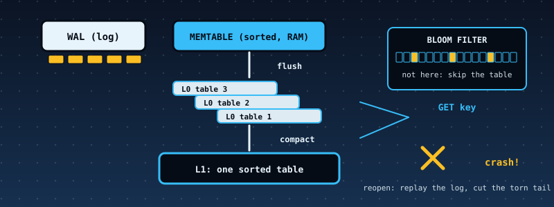

53. A Log-Structured Merge-Tree Key-Value Store: Write-Ahead Log, Sorted Tables, Bloom Filters, Compaction, and a Crash at Every Byte¶

What you will understand: how the storage engines inside LevelDB, RocksDB and Cassandra are built, and, more importantly, how anyone knows such an engine survives a power cut. A store (053_lsm.h/053_lsm.c) takes put, delete and get. A write is appended to a write-ahead log (a CRC-protected record per operation) before it is acknowledged, then placed in an in-memory sorted memtable. A full memtable is flushed to an immutable sorted table file, listed in a manifest. Too many tables are compacted into one, dropping overwritten values and tombstones (delete markers). A read asks the memtable, then the tables newest first, and a per-table Bloom filter and key range skip tables that cannot hold the key. On the kernel it runs on the FAT16 disk; the same code runs on a RAM file system that tears a write at any byte. The chapter's central test crashes a 120-operation workload at every one of 13,639 byte positions, and then crashes recovery itself at every byte, and requires the recovered store to equal the acknowledged state each time.
What you need to know first: Chapter 47's write-ahead log and idempotency ideas, Chapter 30's SHA-256, Chapters 19-23's FAT16 (the store's files live there), and the cumulative kernel.
Scope: three confirmed choices before writing any code¶
First of two further case studies. One AskUserQuestion round: core "WAL + memtable + SSTable + Bloom + compaction" (recommended; MVCC snapshots and a leaner no-Bloom version were offered and not chosen); hardening "Full discipline" (independent Python store, differential tests, fuzzing, mutation tests, disk-image verification). The TLS chapter that follows was scoped in the same round.
Where the design comes from, said plainly¶
There is no real data here, and no claim of compatibility. Keys and values are invented (a warehouse's stock list). The design follows the log-structured merge-tree idea (O'Neil, Cheng, Gawlick and O'Neil, 1996) and the shape of LevelDB and RocksDB as the author understands them; none of those documents was reachable from the sandbox that built this book, so nothing was checked against them. The table and log formats are this chapter's own, LevelDB-inspired and not byte-compatible with LevelDB. What is checked, hard, is the store against its own contract.
The contract, and what the engine does and does not do¶
The crash-safety contract. After a crash at any instant, lsm_open recovers a state equal to the state after the k operations that were acknowledged (put/delete returned LSM_OK), or after k+1 (the operation in flight may or may not have reached the log), and never anything else. The file system must make delete atomic; write and append may be torn, which leaves a prefix of the new bytes. The engine relies on nothing else about disk ordering.
- Write path. If the new entry would overflow the memtable (64 entries or 1,024 bytes) or the log (4,096 bytes), flush first, then append the log record, then insert in the memtable. Flushing before logging keeps a failed flush from ever leaving a half-acknowledged write.
- Log record.
CRC-32 | length | sequence | tombstone | key length | value length | key | value; the CRC covers everything after itself. Recovery replays the valid prefix and stops at the first bad record: a record after damage is never trusted. - Flush. Write the table file, then the manifest, then empty the log. Each step is safe to crash after: an unlisted table is an orphan; a listed table with a still-full log is skipped by the manifest's
flushed_seq. - Manifest. Two alternating slots,
MANI0andMANI1, each"MNFT" | generation | next_id | flushed_seq | n | (id, level)... | CRC-32; the highest valid generation wins, and a write only ever overwrites the older slot, so a torn manifest write can never destroy the live one. (No rename call is needed.) - Table file. Entries sorted by key (
klen | flags | vlen | seq | key | value), a sparse index (every 8th entry), the Bloom filter (10 bits per key, 4 probes), and a 44-byte footer ending in a CRC-32 of the whole file.lsm_table_parsevalidates all of it, so a damaged table is refused, never half-read. - Compaction. When four level-0 tables exist, a k-way merge of every table (newest wins on equal keys) writes one level-1 table, drops tombstones (nothing older remains to hide), writes the manifest, and only then deletes the old tables.
- Recovery. Pick the newest valid manifest; load and validate every listed table; delete orphan tables (unlisted ids up to
next_id); replay the log's valid prefix; if the log had a torn tail, flush what was replayed (which empties the log). Not cutting the log in place is deliberate: cutting means rewriting the valid prefix, and a crash in the middle of that rewrite would lose records already acknowledged. - Limits (so everything stays bounded): keys 1 to 24 bytes, values 0 to 100, 400 keys per table, 12 tables, a 4,096-byte log; single-threaded; a table file is read whole at open and one block (at most 8 entries) per lookup; no MVCC or snapshots, no leveled compaction (one bottom run), no compression, no block cache.
The store: 053_lsm.h and 053_lsm.c¶
/* Chapter 53: a log-structured merge-tree (LSM) key-value store: the storage design of LevelDB, RocksDB and Cassandra, small enough to read in one sitting.
*
* put/delete -> write-ahead log (WAL, one CRC-protected record per operation, appended BEFORE the operation is acknowledged)
* -> memtable (a sorted array in memory)
* memtable full -> FLUSH: written as an immutable sorted table file (T00007.SST), listed in a MANIFEST, WAL emptied
* too many tables -> COMPACTION: every table merged into one bottom-level table; shadowed versions and tombstones (delete markers) are dropped
* get -> memtable, then tables newest first; a per-table Bloom filter and key range skip tables that cannot hold the key
* open -> pick the newest valid MANIFEST, load the tables, delete orphan files, replay the WAL's valid prefix, cut off a torn tail
*
* CRASH SAFETY CONTRACT (what the chapter's tests check at EVERY byte of a workload): after a crash at any instant, open() recovers a state equal to the state after the k operations that were acknowledged
* (put/delete returned LSM_OK), or after k+1 (the operation that was in flight when the crash came may or may not have reached the log); never anything else, never a corrupt store.
* The store talks to storage only through lsm_fs_t, so the same code runs on FAT16 files in the kernel and on a RAM file system with a crash injector on the host. The file system must make delete atomic;
* write() and append() may be TORN by a crash (a PREFIX of the new bytes survives). Nothing is assumed about the order in which different files reach the disk beyond that: the engine only relies on write() having returned.
*
* LIMITS (chapter page lists them): keys 1..24 bytes, values 0..100 bytes, 64 entries in the memtable, at most 400 keys in a table, 12 tables, a 4,096-byte WAL; single-threaded; the whole table file is read at open and
* single blocks (at most 8 entries) afterwards; the file format is this chapter's own (LevelDB-inspired, NOT byte-compatible with LevelDB). */
#ifndef LSM_H
#define LSM_H
#include <stdint.h>
enum { LSM_OK = 0, LSM_ERR_ARG = -1, LSM_ERR_FULL = -2, LSM_ERR_IO = -3, LSM_ERR_CORRUPT = -4 };
#define LSM_MAX_KEY 24
#define LSM_MAX_VAL 100
#define LSM_MEM_MAX 64 /* entries in the memtable */
#define LSM_MEM_BYTES 1024 /* memtable payload bytes that trigger a flush */
#define LSM_WAL_MAX 4096 /* WAL bytes that trigger a flush */
#define LSM_L0_MAX 4 /* level-0 tables that trigger a compaction */
#define LSM_MAX_TABLES 12
#define LSM_MAX_ENTRIES 400 /* keys in one table */
#define LSM_IDX_EVERY 8 /* one sparse-index entry per 8 table entries */
#define LSM_IO_BYTES 65536
typedef struct lsm_fs {
void *ctx;
int (*read)(void *ctx, const char *name, uint32_t off, uint8_t *buf, uint32_t len, uint32_t *got); /* 0 ok (got = bytes read, may be < len at end of file), nonzero if absent */
int (*write)(void *ctx, const char *name, const uint8_t *data, uint32_t len); /* create or replace; a crash may leave a prefix */
int (*append)(void *ctx, const char *name, const uint8_t *data, uint32_t len); /* create if absent; a crash may leave a prefix of data appended */
int (*del)(void *ctx, const char *name); /* atomic; deleting an absent file is not an error */
int (*size)(void *ctx, const char *name, uint32_t *size); /* 0 ok, nonzero if absent */
} lsm_fs_t;
typedef struct { uint8_t klen, tomb; uint16_t vlen; uint32_t seq; uint8_t key[LSM_MAX_KEY]; uint8_t val[LSM_MAX_VAL]; } lsm_ent_t;
typedef struct { uint32_t off; uint8_t klen; uint8_t key[LSM_MAX_KEY]; } lsm_idx_t;
typedef struct {
uint32_t id; uint8_t level; uint32_t n, size, data_len, idx_n, min_seq, max_seq; uint16_t bloom_len; uint8_t minlen, maxlen; uint8_t minkey[LSM_MAX_KEY], maxkey[LSM_MAX_KEY];
uint8_t bloom[512]; lsm_idx_t idx[LSM_MAX_ENTRIES / LSM_IDX_EVERY + 1];
} lsm_tab_t;
typedef struct { uint32_t puts, deletes, flushes, compactions, gets, bloom_skips, range_skips, block_reads, wal_replayed, wal_cut_bytes, orphans_deleted; } lsm_stats_t;
typedef struct {
lsm_fs_t fs; lsm_ent_t mem[LSM_MEM_MAX]; uint32_t nmem, membytes, wal_bytes; uint32_t seq, flushed_seq, next_id, gen; uint8_t failed; /* set by any I/O error: the store then refuses every write, like a database that has gone read-only */
lsm_tab_t tab[LSM_MAX_TABLES]; uint32_t ntab; /* newest level-0 table first, the level-1 table (if any) last */
lsm_stats_t st; uint8_t io[LSM_IO_BYTES + 256]; uint8_t blk[8 * (8 + LSM_MAX_KEY + LSM_MAX_VAL) + 16];
} lsm_t;
int lsm_open(lsm_t *s, const lsm_fs_t *fs); /* recovers; LSM_OK, or LSM_ERR_CORRUPT / LSM_ERR_IO */
int lsm_put(lsm_t *s, const uint8_t *key, uint32_t klen, const uint8_t *val, uint32_t vlen);
int lsm_delete(lsm_t *s, const uint8_t *key, uint32_t klen);
int lsm_get(lsm_t *s, const uint8_t *key, uint32_t klen, uint8_t *out, uint32_t cap, uint32_t *vlen); /* 1 found, 0 not found, <0 error; vlen is the value's length (out receives at most cap bytes) */
int lsm_flush(lsm_t *s); /* memtable -> a new level-0 table (a no-op when empty); may then compact */
int lsm_compact(lsm_t *s); /* all tables -> one level-1 table, tombstones dropped */
int lsm_digest(lsm_t *s, uint8_t out[32], uint32_t *count); /* SHA-256 over every live pair in key order: klen, vlen, key, value; count = live keys */
int lsm_table_parse(const uint8_t *buf, uint32_t size, lsm_tab_t *out); /* validates a table file image completely; 0 ok */
uint32_t lsm_crc32(const uint8_t *p, uint32_t n);
#endif
/* Chapter 53: the LSM key-value store (see 053_lsm.h). Freestanding: no libc, no libgcc (only 32-bit arithmetic is used). */
#include "053_lsm.h"
#include "053_sha256.h"
static void p16(uint8_t *p, uint32_t v) { p[0] = (uint8_t)v; p[1] = (uint8_t)(v >> 8); }
static void p32(uint8_t *p, uint32_t v) { p16(p, v); p16(p + 2, v >> 16); }
static uint32_t g16(const uint8_t *p) { return (uint32_t)p[0] | ((uint32_t)p[1] << 8); }
static uint32_t g32(const uint8_t *p) { return g16(p) | (g16(p + 2) << 16); }
static void cpy(uint8_t *d, const uint8_t *s, uint32_t n) { for (uint32_t i = 0; i < n; i++) { d[i] = s[i]; } }
static int kcmp(const uint8_t *a, uint32_t al, const uint8_t *b, uint32_t bl) { uint32_t n = al < bl ? al : bl; for (uint32_t i = 0; i < n; i++) { if (a[i] != b[i]) { return a[i] < b[i] ? -1 : 1; } } return al == bl ? 0 : (al < bl ? -1 : 1); }
uint32_t lsm_crc32(const uint8_t *p, uint32_t n) { uint32_t c = 0xFFFFFFFFu; for (uint32_t i = 0; i < n; i++) { c ^= p[i]; for (int k = 0; k < 8; k++) { c = (c >> 1) ^ (0xEDB88320u & (0u - (c & 1u))); } } return ~c; }
/* ---- Bloom filter: 10 bits per key, 4 probes by double hashing (FNV-1a and a multiplicative hash) ---- */
static uint32_t hash1(const uint8_t *k, uint32_t n) { uint32_t h = 2166136261u; for (uint32_t i = 0; i < n; i++) { h ^= k[i]; h *= 16777619u; } return h; }
static uint32_t hash2(const uint8_t *k, uint32_t n) { uint32_t h = 5381u; for (uint32_t i = 0; i < n; i++) { h = h * 33u ^ k[i]; } return h | 1u; }
static void bloom_set(uint8_t *bits, uint32_t nbytes, const uint8_t *k, uint32_t kl) { uint32_t nb = nbytes * 8u, a = hash1(k, kl), b = hash2(k, kl); for (uint32_t i = 0; i < 4; i++) { uint32_t bit = (a + i * b) % nb; bits[bit >> 3] |= (uint8_t)(1u << (bit & 7u)); } }
static int bloom_has(const uint8_t *bits, uint32_t nbytes, const uint8_t *k, uint32_t kl) { uint32_t nb = nbytes * 8u, a = hash1(k, kl), b = hash2(k, kl); for (uint32_t i = 0; i < 4; i++) { uint32_t bit = (a + i * b) % nb; if (!(bits[bit >> 3] & (1u << (bit & 7u)))) { return 0; } } return 1; }
static uint32_t bloom_bytes(uint32_t n) { uint32_t b = (n * 10u + 7u) / 8u; return b < 8u ? 8u : b; }
static void tname(uint32_t id, char *o) { o[0] = 'T'; for (int i = 5; i >= 1; i--) { o[i] = (char)('0' + id % 10u); id /= 10u; } o[6] = '.'; o[7] = 'S'; o[8] = 'S'; o[9] = 'T'; o[10] = 0; }
/* ---- table files ----
* data: entries, each klen u8 | flags u8 (bit 0 = tombstone) | vlen u16 | seq u32 | key | value sorted by key, unique
* index: one entry per LSM_IDX_EVERY data entries: offset u32 | klen u8 | key
* bloom: the Bloom filter bits
* footer: 44 bytes, all u32 little endian: magic "LSM1" | n | data_len | index_off | index_len | bloom_off | bloom_len | min_seq | max_seq | 0 | CRC-32 of every byte before it */
#define FOOT 44u
#define TMAGIC 0x314D534Cu
static uint32_t ent_size(const lsm_ent_t *e) { return 8u + e->klen + e->vlen; }
static void ent_put(uint8_t *p, const lsm_ent_t *e) { p[0] = e->klen; p[1] = e->tomb; p16(p + 2, e->vlen); p32(p + 4, e->seq); cpy(p + 8, e->key, e->klen); cpy(p + 8 + e->klen, e->val, e->vlen); }
static int ent_get(const uint8_t *p, uint32_t avail, lsm_ent_t *e) { /* 0 ok, -1 malformed */
if (avail < 8u) { return -1; } e->klen = p[0]; e->tomb = p[1]; e->vlen = (uint16_t)g16(p + 2); e->seq = g32(p + 4);
if (e->klen < 1 || e->klen > LSM_MAX_KEY || e->tomb > 1 || e->vlen > LSM_MAX_VAL || (e->tomb && e->vlen != 0) || avail < 8u + e->klen + e->vlen) { return -1; }
cpy(e->key, p + 8, e->klen); cpy(e->val, p + 8 + e->klen, e->vlen); return 0;
}
int lsm_table_parse(const uint8_t *buf, uint32_t size, lsm_tab_t *o) {
if (size < FOOT + 8u || size > LSM_IO_BYTES) { return -1; }
const uint8_t *f = buf + size - FOOT; if (g32(f) != TMAGIC || g32(f + 40) != lsm_crc32(buf, size - 4u) || g32(f + 36) != 0) { return -1; }
uint32_t n = g32(f + 4), dl = g32(f + 8), io = g32(f + 12), il = g32(f + 16), bo = g32(f + 20), bl = g32(f + 24), mins = g32(f + 28), maxs = g32(f + 32);
if (n < 1 || n > LSM_MAX_ENTRIES || io != dl || bo != io + il || bl != bloom_bytes(n) || bl > 512u || bo + bl + FOOT != size) { return -1; }
uint32_t off = 0, cnt = 0, lo = 0xFFFFFFFFu, hi = 0, ip = io, in = 0; lsm_ent_t e, prev; prev.klen = 0;
while (off < dl) {
if (ent_get(buf + off, dl - off, &e)) { return -1; }
if (cnt > 0 && kcmp(prev.key, prev.klen, e.key, e.klen) >= 0) { return -1; }
if (cnt % LSM_IDX_EVERY == 0) { /* the index must hold exactly this entry */
if (ip + 5u + e.klen > io + il || g32(buf + ip) != off || buf[ip + 4] != e.klen) { return -1; } for (uint32_t i = 0; i < e.klen; i++) { if (buf[ip + 5 + i] != e.key[i]) { return -1; } }
if (in >= LSM_MAX_ENTRIES / LSM_IDX_EVERY + 1) { return -1; } o->idx[in].off = off; o->idx[in].klen = e.klen; cpy(o->idx[in].key, e.key, e.klen); ip += 5u + e.klen; in++;
}
if (cnt == 0) { o->minlen = e.klen; cpy(o->minkey, e.key, e.klen); }
if (e.seq < lo) { lo = e.seq; } if (e.seq > hi) { hi = e.seq; }
prev = e; off += ent_size(&e); cnt++;
}
if (off != dl || cnt != n || ip != io + il || lo != mins || hi != maxs) { return -1; }
o->maxlen = prev.klen; cpy(o->maxkey, prev.key, prev.klen); o->n = n; o->size = size; o->data_len = dl; o->idx_n = in; o->min_seq = mins; o->max_seq = maxs; o->bloom_len = (uint16_t)bl; cpy(o->bloom, buf + bo, bl);
return 0;
}
typedef struct { uint8_t *buf; uint32_t len, n; } bld_t;
static int bld_add(bld_t *b, const lsm_ent_t *e) { if (b->n >= LSM_MAX_ENTRIES) { return LSM_ERR_FULL; } ent_put(b->buf + b->len, e); b->len += ent_size(e); b->n++; return LSM_OK; }
static int bld_finish(bld_t *b, uint32_t id, uint8_t level, lsm_tab_t *meta) { /* appends index, bloom and footer, then re-parses the image into meta */
uint32_t dl = b->len, off = 0, cnt = 0, mins = 0xFFFFFFFFu, maxs = 0; lsm_ent_t e; uint8_t *p = b->buf + dl;
while (off < dl) { ent_get(b->buf + off, dl - off, &e); if (cnt % LSM_IDX_EVERY == 0) { p32(p, off); p[4] = e.klen; cpy(p + 5, e.key, e.klen); p += 5u + e.klen; } if (e.seq < mins) { mins = e.seq; } if (e.seq > maxs) { maxs = e.seq; } off += ent_size(&e); cnt++; }
uint32_t il = (uint32_t)(p - (b->buf + dl)), bl = bloom_bytes(b->n); uint8_t *bits = p; for (uint32_t i = 0; i < bl; i++) { bits[i] = 0; }
for (off = 0; off < dl;) { ent_get(b->buf + off, dl - off, &e); bloom_set(bits, bl, e.key, e.klen); off += ent_size(&e); }
p += bl; p32(p, TMAGIC); p32(p + 4, b->n); p32(p + 8, dl); p32(p + 12, dl); p32(p + 16, il); p32(p + 20, dl + il); p32(p + 24, bl); p32(p + 28, mins); p32(p + 32, maxs); p32(p + 36, 0);
uint32_t total = (uint32_t)(p - b->buf) + 44u; p32(p + 40, lsm_crc32(b->buf, total - 4u)); b->len = total;
if (lsm_table_parse(b->buf, total, meta)) { return LSM_ERR_CORRUPT; } meta->id = id; meta->level = level; return LSM_OK;
}
/* ---- the manifest: two alternating slots MANI0 / MANI1, each "MNFT" | gen | next_id | flushed_seq | ntab u16 | ntab x (id u32, level u8) | CRC-32 ---- */
static int write_manifest(lsm_t *s, const lsm_tab_t *first, uint32_t next_id, uint32_t flushed_seq, const lsm_tab_t *old, uint32_t nold, uint32_t skip_all) {
uint8_t m[96]; uint32_t nt = (first ? 1u : 0u) + (skip_all ? 0u : nold), o = 0; p32(m, 0x54464E4Du); p32(m + 4, s->gen + 1u); p32(m + 8, next_id); p32(m + 12, flushed_seq); p16(m + 16, nt); o = 18;
if (first) { p32(m + o, first->id); m[o + 4] = first->level; o += 5; }
if (!skip_all) { for (uint32_t i = 0; i < nold; i++) { p32(m + o, old[i].id); m[o + 4] = old[i].level; o += 5; } }
p32(m + o, lsm_crc32(m, o)); o += 4; char nm[6] = {'M', 'A', 'N', 'I', (char)('0' + ((s->gen + 1u) & 1u)), 0};
if (s->fs.write(s->fs.ctx, nm, m, o)) { s->failed = 1; return LSM_ERR_IO; } return LSM_OK;
}
/* ---- the memtable ---- */
static int mem_find(const lsm_t *s, const uint8_t *k, uint32_t kl, uint32_t *pos) { uint32_t lo = 0, hi = s->nmem; while (lo < hi) { uint32_t mid = (lo + hi) / 2u; int c = kcmp(s->mem[mid].key, s->mem[mid].klen, k, kl); if (c == 0) { *pos = mid; return 1; } if (c < 0) { lo = mid + 1u; } else { hi = mid; } } *pos = lo; return 0; }
static void mem_apply(lsm_t *s, const lsm_ent_t *e) {
uint32_t pos; if (mem_find(s, e->key, e->klen, &pos)) { s->membytes -= ent_size(&s->mem[pos]); }
else { for (uint32_t i = s->nmem; i > pos; i--) { s->mem[i] = s->mem[i - 1]; } s->nmem++; }
s->mem[pos] = *e; s->membytes += ent_size(e);
}
/* ---- a merge over the memtable and every table: newest source wins for equal keys ---- */
typedef struct { int is_mem; uint32_t ti, pos; int valid; lsm_ent_t e; } cur_t;
static int cur_next(lsm_t *s, cur_t *c) { /* advances to the next entry; sets c->valid; LSM_OK or an error */
if (c->is_mem) { if (c->pos < s->nmem) { c->e = s->mem[c->pos++]; c->valid = 1; } else { c->valid = 0; } return LSM_OK; }
const lsm_tab_t *t = &s->tab[c->ti]; if (c->pos >= t->data_len) { c->valid = 0; return LSM_OK; }
char nm[11]; tname(t->id, nm); uint32_t got = 0, want = t->data_len - c->pos; if (want > 8u + LSM_MAX_KEY + LSM_MAX_VAL) { want = 8u + LSM_MAX_KEY + LSM_MAX_VAL; }
if (s->fs.read(s->fs.ctx, nm, c->pos, s->blk, want, &got)) { s->failed = 1; return LSM_ERR_IO; }
if (ent_get(s->blk, got, &c->e)) { return LSM_ERR_CORRUPT; } c->pos += ent_size(&c->e); c->valid = 1; return LSM_OK;
}
typedef int (*emit_fn)(void *ctx, const lsm_ent_t *e);
static int merge_run(lsm_t *s, int with_mem, emit_fn emit, void *ctx) {
cur_t cur[LSM_MAX_TABLES + 1]; uint32_t nc = 0; int rc;
if (with_mem) { cur[nc].is_mem = 1; cur[nc].ti = 0; cur[nc].pos = 0; nc++; }
for (uint32_t i = 0; i < s->ntab; i++) { cur[nc].is_mem = 0; cur[nc].ti = i; cur[nc].pos = 0; nc++; }
for (uint32_t i = 0; i < nc; i++) { if ((rc = cur_next(s, &cur[i]))) { return rc; } }
for (;;) {
int w = -1; for (uint32_t i = 0; i < nc; i++) { if (cur[i].valid && (w < 0 || kcmp(cur[i].e.key, cur[i].e.klen, cur[w].e.key, cur[w].e.klen) < 0)) { w = (int)i; } }
if (w < 0) { return LSM_OK; }
lsm_ent_t win = cur[w].e; if ((rc = emit(ctx, &win))) { return rc; }
for (uint32_t i = 0; i < nc; i++) { if (cur[i].valid && kcmp(cur[i].e.key, cur[i].e.klen, win.key, win.klen) == 0) { if ((rc = cur_next(s, &cur[i]))) { return rc; } } }
}
}
/* ---- flush and compaction ---- */
static uint32_t count_l0(const lsm_t *s) { uint32_t n = 0; for (uint32_t i = 0; i < s->ntab; i++) { if (s->tab[i].level == 0) { n++; } } return n; }
static int emit_build(void *ctx, const lsm_ent_t *e) { return e->tomb ? LSM_OK : bld_add((bld_t *)ctx, e); } /* the bottom level keeps no tombstones */
int lsm_compact(lsm_t *s) {
if (s->failed) { return LSM_ERR_IO; } if (s->ntab == 0 || (s->ntab == 1 && s->tab[0].level == 1)) { return LSM_OK; } if (s->next_id > 99999u) { return LSM_ERR_FULL; }
bld_t b = {s->io, 0, 0}; int rc = merge_run(s, 0, emit_build, &b); if (rc) { return rc; }
uint32_t id = s->next_id; lsm_tab_t keep[LSM_MAX_TABLES]; uint32_t nold = s->ntab; for (uint32_t i = 0; i < nold; i++) { keep[i].id = s->tab[i].id; keep[i].level = s->tab[i].level; }
if (b.n > 0) {
lsm_tab_t meta; if ((rc = bld_finish(&b, id, 1, &meta))) { return rc; } char nm[11]; tname(id, nm);
if (s->fs.write(s->fs.ctx, nm, s->io, b.len)) { s->failed = 1; return LSM_ERR_IO; }
if ((rc = write_manifest(s, &meta, id + 1u, s->flushed_seq, keep, nold, 1))) { return rc; } s->gen++; s->next_id = id + 1u;
for (uint32_t i = 0; i < nold; i++) { char on[11]; tname(keep[i].id, on); s->fs.del(s->fs.ctx, on); } s->tab[0] = meta; s->ntab = 1;
} else {
if ((rc = write_manifest(s, 0, id + 1u, s->flushed_seq, keep, nold, 1))) { return rc; } s->gen++; s->next_id = id + 1u;
for (uint32_t i = 0; i < nold; i++) { char on[11]; tname(keep[i].id, on); s->fs.del(s->fs.ctx, on); } s->ntab = 0;
}
s->st.compactions++; return LSM_OK;
}
int lsm_flush(lsm_t *s) {
if (s->failed) { return LSM_ERR_IO; } if (s->nmem == 0) { return LSM_OK; } if (s->ntab >= LSM_MAX_TABLES || s->next_id > 99999u) { return LSM_ERR_FULL; }
bld_t b = {s->io, 0, 0}; int rc; for (uint32_t i = 0; i < s->nmem; i++) { if ((rc = bld_add(&b, &s->mem[i]))) { return rc; } }
uint32_t id = s->next_id; lsm_tab_t meta; if ((rc = bld_finish(&b, id, 0, &meta))) { return rc; } char nm[11]; tname(id, nm);
if (s->fs.write(s->fs.ctx, nm, s->io, b.len)) { s->failed = 1; return LSM_ERR_IO; }
lsm_tab_t keep[LSM_MAX_TABLES]; for (uint32_t i = 0; i < s->ntab; i++) { keep[i].id = s->tab[i].id; keep[i].level = s->tab[i].level; }
if ((rc = write_manifest(s, &meta, id + 1u, s->seq, keep, s->ntab, 0))) { return rc; }
for (uint32_t i = s->ntab; i > 0; i--) { s->tab[i] = s->tab[i - 1]; } s->tab[0] = meta; s->ntab++; s->gen++; s->next_id = id + 1u; s->flushed_seq = s->seq; s->nmem = 0; s->membytes = 0; s->st.flushes++;
if (s->fs.write(s->fs.ctx, "WAL", s->io, 0)) { s->failed = 1; return LSM_ERR_IO; } s->wal_bytes = 0;
if (count_l0(s) >= LSM_L0_MAX) { return lsm_compact(s); } return LSM_OK;
}
/* ---- writes ---- */
static int mutate(lsm_t *s, const uint8_t *key, uint32_t klen, const uint8_t *val, uint32_t vlen, int tomb) {
if (s->failed) { return LSM_ERR_IO; } if (!key || klen < 1 || klen > LSM_MAX_KEY || vlen > LSM_MAX_VAL || (vlen && !val)) { return LSM_ERR_ARG; }
lsm_ent_t e; e.klen = (uint8_t)klen; e.tomb = (uint8_t)tomb; e.vlen = (uint16_t)vlen; e.seq = s->seq + 1u; cpy(e.key, key, klen); cpy(e.val, val, vlen);
uint32_t pos, rec = 6u + 8u + klen + vlen; int exists = mem_find(s, key, klen, &pos); uint32_t nb = s->membytes + ent_size(&e) - (exists ? ent_size(&s->mem[pos]) : 0u);
if (s->nmem > 0 && ((!exists && s->nmem >= LSM_MEM_MAX) || nb > LSM_MEM_BYTES || s->wal_bytes + rec > LSM_WAL_MAX)) { int rc = lsm_flush(s); if (rc) { return rc; } }
uint8_t r[6 + 8 + LSM_MAX_KEY + LSM_MAX_VAL]; p16(r + 4, 8u + klen + vlen); p32(r + 6, e.seq); r[10] = (uint8_t)tomb; r[11] = (uint8_t)klen; p16(r + 12, vlen); cpy(r + 14, key, klen); cpy(r + 14 + klen, val, vlen);
p32(r, lsm_crc32(r + 4, rec - 4u)); if (s->fs.append(s->fs.ctx, "WAL", r, rec)) { s->failed = 1; return LSM_ERR_IO; }
s->seq = e.seq; s->wal_bytes += rec; mem_apply(s, &e); if (tomb) { s->st.deletes++; } else { s->st.puts++; } return LSM_OK;
}
int lsm_put(lsm_t *s, const uint8_t *key, uint32_t klen, const uint8_t *val, uint32_t vlen) { return mutate(s, key, klen, val, vlen, 0); }
int lsm_delete(lsm_t *s, const uint8_t *key, uint32_t klen) { return mutate(s, key, klen, 0, 0, 1); }
/* ---- reads ---- */
int lsm_get(lsm_t *s, const uint8_t *key, uint32_t klen, uint8_t *out, uint32_t cap, uint32_t *vlen) {
if (!key || klen < 1 || klen > LSM_MAX_KEY) { return LSM_ERR_ARG; } s->st.gets++; uint32_t pos; lsm_ent_t e;
if (mem_find(s, key, klen, &pos)) { e = s->mem[pos]; goto found; }
for (uint32_t ti = 0; ti < s->ntab; ti++) {
const lsm_tab_t *t = &s->tab[ti];
if (kcmp(key, klen, t->minkey, t->minlen) < 0 || kcmp(key, klen, t->maxkey, t->maxlen) > 0) { s->st.range_skips++; continue; }
if (!bloom_has(t->bloom, t->bloom_len, key, klen)) { s->st.bloom_skips++; continue; }
uint32_t lo = 0, hi = t->idx_n; /* the last index entry whose key is <= key */
while (lo + 1u < hi) { uint32_t mid = (lo + hi) / 2u; if (kcmp(t->idx[mid].key, t->idx[mid].klen, key, klen) <= 0) { lo = mid; } else { hi = mid; } }
uint32_t from = t->idx[lo].off, to = lo + 1u < t->idx_n ? t->idx[lo + 1u].off : t->data_len, got = 0; char nm[11]; tname(t->id, nm); s->st.block_reads++;
if (s->fs.read(s->fs.ctx, nm, from, s->blk, to - from, &got) || got != to - from) { return LSM_ERR_IO; }
for (uint32_t off = 0; off < got;) { lsm_ent_t x; if (ent_get(s->blk + off, got - off, &x)) { return LSM_ERR_CORRUPT; } int c = kcmp(x.key, x.klen, key, klen); if (c == 0) { e = x; goto found; } if (c > 0) { break; } off += ent_size(&x); }
}
return 0;
found:
if (e.tomb) { return 0; } if (vlen) { *vlen = e.vlen; } for (uint32_t i = 0; i < e.vlen && i < cap; i++) { out[i] = e.val[i]; } return 1;
}
typedef struct { sha256_ctx_t h; uint32_t n; } dig_t;
static int emit_digest(void *ctx, const lsm_ent_t *e) { dig_t *d = (dig_t *)ctx; if (e->tomb) { return LSM_OK; } uint8_t hd[2] = {e->klen, (uint8_t)e->vlen}; sha256_update(&d->h, hd, 2); sha256_update(&d->h, e->key, e->klen); sha256_update(&d->h, e->val, e->vlen); d->n++; return LSM_OK; }
int lsm_digest(lsm_t *s, uint8_t out[32], uint32_t *count) { dig_t d; sha256_init(&d.h); d.n = 0; int rc = merge_run(s, 1, emit_digest, &d); if (rc) { return rc; } sha256_final(&d.h, out); if (count) { *count = d.n; } return LSM_OK; }
/* ---- recovery ---- */
static int load_manifest(lsm_t *s, int slot, uint32_t *gen, uint32_t *next_id, uint32_t *fseq, uint32_t *ids, uint8_t *lv, uint32_t *nt) {
char nm[6] = {'M', 'A', 'N', 'I', (char)('0' + slot), 0}; uint32_t sz, got; if (s->fs.size(s->fs.ctx, nm, &sz) || sz < 22u || sz > 96u) { return -1; }
if (s->fs.read(s->fs.ctx, nm, 0, s->io, sz, &got) || got != sz) { return -1; } const uint8_t *m = s->io; uint32_t n = g16(m + 16);
if (g32(m) != 0x54464E4Du || n > LSM_MAX_TABLES || sz != 18u + 5u * n + 4u || g32(m + sz - 4u) != lsm_crc32(m, sz - 4u)) { return -1; }
*gen = g32(m + 4); *next_id = g32(m + 8); *fseq = g32(m + 12); *nt = n; for (uint32_t i = 0; i < n; i++) { ids[i] = g32(m + 18 + 5 * i); lv[i] = m[18 + 5 * i + 4]; } return 0;
}
int lsm_open(lsm_t *s, const lsm_fs_t *fs) {
s->fs = *fs; s->nmem = s->membytes = s->wal_bytes = 0; s->seq = s->flushed_seq = s->gen = 0; s->next_id = 1; s->ntab = 0; s->failed = 0; s->st = (lsm_stats_t){0};
uint32_t bg = 0, bn = 1, bf = 0, bids[LSM_MAX_TABLES], bt = 0; uint8_t blv[LSM_MAX_TABLES]; int have = 0;
for (int slot = 0; slot < 2; slot++) {
uint32_t g, n, f, ids[LSM_MAX_TABLES], nt; uint8_t lv[LSM_MAX_TABLES]; if (load_manifest(s, slot, &g, &n, &f, ids, lv, &nt)) { continue; }
if (!have || g > bg) { have = 1; bg = g; bn = n; bf = f; bt = nt; for (uint32_t i = 0; i < nt; i++) { bids[i] = ids[i]; blv[i] = lv[i]; } }
}
s->gen = bg; s->next_id = bn; s->flushed_seq = bf; s->seq = bf;
for (uint32_t i = 0; i < bt; i++) { /* every listed table must be present and valid; levels: level-0 tables first, at most one level-1 table, last */
if (blv[i] > 1 || (blv[i] == 1 && i + 1u != bt) || bids[i] == 0 || bids[i] >= bn) { return LSM_ERR_CORRUPT; }
char nm[11]; tname(bids[i], nm); uint32_t sz, got; if (s->fs.size(s->fs.ctx, nm, &sz) || sz > LSM_IO_BYTES || s->fs.read(s->fs.ctx, nm, 0, s->io, sz, &got) || got != sz) { return LSM_ERR_CORRUPT; }
if (lsm_table_parse(s->io, sz, &s->tab[i])) { return LSM_ERR_CORRUPT; } s->tab[i].id = bids[i]; s->tab[i].level = blv[i];
}
s->ntab = bt;
for (uint32_t id = 1; id <= s->next_id && id <= 99999u; id++) { int live = 0; for (uint32_t i = 0; i < bt; i++) { if (bids[i] == id) { live = 1; } } if (live) { continue; } char nm[11]; tname(id, nm); uint32_t sz; if (!s->fs.size(s->fs.ctx, nm, &sz)) { s->fs.del(s->fs.ctx, nm); s->st.orphans_deleted++; } }
uint32_t wsz = 0, got = 0, pos = 0, prev = 0; int torn = 0;
if (!s->fs.size(s->fs.ctx, "WAL", &wsz)) {
if (wsz > LSM_IO_BYTES || s->fs.read(s->fs.ctx, "WAL", 0, s->io, wsz, &got) || got != wsz) { return LSM_ERR_IO; }
while (pos < wsz) {
const uint8_t *r = s->io + pos; if (wsz - pos < 6u) { break; } uint32_t pl = g16(r + 4); if (pl < 8u || pl > 8u + LSM_MAX_KEY + LSM_MAX_VAL || wsz - pos < 6u + pl) { break; }
if (g32(r) != lsm_crc32(r + 4, 2u + pl)) { break; }
lsm_ent_t e; e.seq = g32(r + 6); e.tomb = r[10]; e.klen = r[11]; e.vlen = (uint16_t)g16(r + 12);
if (e.klen < 1 || e.klen > LSM_MAX_KEY || e.tomb > 1 || e.vlen > LSM_MAX_VAL || (e.tomb && e.vlen) || pl != 8u + e.klen + e.vlen || e.seq <= prev) { break; }
cpy(e.key, r + 14, e.klen); cpy(e.val, r + 14 + e.klen, e.vlen); prev = e.seq;
if (e.seq > s->flushed_seq) { mem_apply(s, &e); s->st.wal_replayed++; if (e.seq > s->seq) { s->seq = e.seq; } }
pos += 6u + pl;
}
torn = pos != wsz; s->st.wal_cut_bytes = wsz - pos; s->wal_bytes = pos;
}
if (s->nmem > LSM_MEM_MAX) { return LSM_ERR_CORRUPT; }
if (torn) { /* the log cannot be appended to after garbage, and cutting it in place could lose records if the cut itself were torn: flush what was replayed (crash-safe), which empties the log */
int rc; if (s->nmem > 0) { rc = lsm_flush(s); } else { rc = s->fs.write(s->fs.ctx, "WAL", s->io, 0) ? LSM_ERR_IO : LSM_OK; if (!rc) { s->wal_bytes = 0; } else { s->failed = 1; } } if (rc) { return rc; }
}
return LSM_OK;
}
The data: make_kv.py, 053_kvdata_data.asm¶
#!/usr/bin/env python3
"""Chapter 53: writes data/kv/demo.txt, the scripted workload the kernel runs against the store on the real FAT16 disk: an INVENTED warehouse's stock list (SKU -> description and quantity). Same command language as native/lsm_cli.c (put, del, get, flush, compact, digest, stats).
Phases: load 70 SKUs (the memtable fills and flushes several times; four level-0 tables trigger a compaction), reads (hits, misses, a deleted SKU), restock and sell-through updates, discontinued SKUs deleted, a second compaction. Fully deterministic."""
import os, random
R = random.Random(53); out = []
ITEMS = ["bolt", "nut", "washer", "screw", "bracket", "hinge", "latch", "spring", "gasket", "bearing", "valve", "clamp"]
def desc(i): return "%s-%s:qty=%d" % (ITEMS[i % len(ITEMS)], "abcdefghij"[i % 10] * (6 + i % 9), 20 + (i * 37) % 400)
for i in range(70): out.append(f"put sku:{1000 + i} {desc(i)}")
out += ["digest", "stats"]
for i in (3, 17, 42, 69): out.append(f"get sku:{1000 + i}")
out += ["get sku:9999", "get sku:0001", "stats"]
for i in range(0, 70, 7): out.append(f"put sku:{1000 + i} {desc(i + 1)}")
for i in (5, 6, 7, 8, 9, 10, 11, 12): out.append(f"del sku:{1000 + i}")
out += ["get sku:1005", "get sku:1007", "flush", "digest", "compact", "stats"]
for i in range(70, 95): out.append(f"put sku:{1000 + i} {desc(i)}")
out += ["get sku:1080", "get sku:1010", "get sku:1070", "digest", "stats"]
d = os.path.join(os.path.dirname(os.path.abspath(__file__)), "data", "kv"); os.makedirs(d, exist_ok=True); open(os.path.join(d, "demo.txt"), "w").write("\n".join(out) + "\n"); print(len(out), "commands")
; Chapter 53: the scripted warehouse workload, baked into the kernel image with NASM's incbin (path relative to the chapter's code directory). Made by make_kv.py.
BITS 32
section .rodata
global kv_demo_start, kv_demo_end
kv_demo_start: incbin "data/kv/demo.txt"
kv_demo_end:
053_kmain.c: the LSM demo¶
The kernel talks to FAT16 through five small functions (a file's whole contents are read per call: this is a teaching volume; an empty write deletes; an append is read, extend, write). The crash sweep needs a file system that can tear a write, so the kernel carries its own 70-line RAM file system with the crash injector.
/* =====================================================================================================================
* Chapter 53: the LSM key-value store demo. (1) A scripted warehouse stock list (data/kv/demo.txt, 133 commands) runs against the store on the REAL FAT16 disk: every put is a WAL append, every flush a table file plus a manifest.
* The canonical result lines are printed between @@ markers for verify_053.py. (2) The files the store left on the disk are listed. (3) A real recovery on the real disk: two more puts, the log cut in the middle of the last record, an orphan table file
* planted; a fresh store is opened and must replay one record, cut the torn tail, delete the orphan and still hold everything acknowledged. (4) The crash sweep INSIDE the kernel: a 40-operation workload on a RAM file system with the crash injector,
* crashed at every 7th unit of cost; every recovered state must be the state after the acknowledged operations or the one in flight. verify_053.py re-runs both the script and the sweep in Python. */
extern const char kv_demo_start[], kv_demo_end[];
static lsm_t g_kvS, g_kvS2;
static uint8_t g_kvfb[LSM_IO_BYTES + 64], g_kvab[8192];
static uint32_t g_kv_cmds, g_kv_recover, g_kv_points, g_kv_fail;
static void kv_cp(uint8_t *d, const uint8_t *s, uint32_t n) { for (uint32_t i = 0; i < n; i++) { d[i] = s[i]; } }
static int kv_eq(const char *a, const char *b) { while (*a && *a == *b) { a++; b++; } return *a == *b; }
static void kv_hex(const uint8_t *p, uint32_t n, char *o) { static const char H[] = "0123456789abcdef"; uint32_t k = 0; for (uint32_t i = 0; i < n; i++) { o[k++] = H[p[i] >> 4]; o[k++] = H[p[i] & 15]; } if (!n) { o[k++] = '-'; } o[k] = 0; }
/* the store on FAT16: a file's whole contents are read per call (this is a teaching volume); write = delete then create; an empty write deletes; append = read, extend, write */
static int kvd_size(void *c, const char *n, uint32_t *sz) { (void)c; uint32_t got = 0; if (!fat16_read_file(n, g_kvfb, sizeof g_kvfb, &got)) { return 1; } *sz = got; return 0; }
static int kvd_read(void *c, const char *n, uint32_t off, uint8_t *b, uint32_t len, uint32_t *got) { (void)c; uint32_t sz = 0; if (!fat16_read_file(n, g_kvfb, sizeof g_kvfb, &sz)) { return 1; } uint32_t k = off >= sz ? 0 : (sz - off < len ? sz - off : len); kv_cp(b, g_kvfb + off, k); *got = k; return 0; }
static int kvd_write(void *c, const char *n, const uint8_t *d, uint32_t len) { (void)c; fat16_delete_file(n); if (len == 0) { return 0; } return fat16_create_file(n, d, len, 0) ? 0 : 1; }
static int kvd_append(void *c, const char *n, const uint8_t *d, uint32_t len) { uint32_t sz = 0; if (!fat16_read_file(n, g_kvab, sizeof g_kvab, &sz)) { sz = 0; } if (sz + len > sizeof g_kvab) { return 1; } kv_cp(g_kvab + sz, d, len); return kvd_write(c, n, g_kvab, sz + len); }
static int kvd_del(void *c, const char *n) { (void)c; fat16_delete_file(n); return 0; }
static lsm_fs_t kv_diskfs(void) { lsm_fs_t f = {0, kvd_read, kvd_write, kvd_append, kvd_del, kvd_size}; return f; }
/* a RAM file system with the crash injector (ramfs.h's model: write/append cost len+1, delete 1; a short budget tears the operation) */
#define KR_FILES 12
#define KR_CAP 12000
typedef struct { char name[16]; int used; uint32_t len; uint8_t d[KR_CAP]; } kr_file_t;
typedef struct { kr_file_t f[KR_FILES]; long budget, spent; int crashed; } kr_t;
static kr_t g_kr0, g_kr1, g_kr2;
static kr_file_t *kr_find(kr_t *r, const char *n) { for (int i = 0; i < KR_FILES; i++) { if (r->f[i].used && kv_eq(r->f[i].name, n)) { return &r->f[i]; } } return 0; }
static kr_file_t *kr_make(kr_t *r, const char *n) { kr_file_t *f = kr_find(r, n); if (f) { return f; } for (int i = 0; i < KR_FILES; i++) { if (!r->f[i].used) { r->f[i].used = 1; int k = 0; while (n[k] && k < 15) { r->f[i].name[k] = n[k]; k++; } r->f[i].name[k] = 0; r->f[i].len = 0; return &r->f[i]; } } return 0; }
static int kr_charge(kr_t *r, long cost, long *allowed) { if (r->crashed) { *allowed = 0; return -1; } if (r->budget < 0 || r->budget >= cost) { if (r->budget >= 0) { r->budget -= cost; } r->spent += cost; *allowed = cost; return 1; } *allowed = r->budget; r->spent += r->budget; r->budget = 0; r->crashed = 1; return 0; }
static int krf_read(void *c, const char *n, uint32_t off, uint8_t *b, uint32_t len, uint32_t *got) { kr_file_t *f = kr_find((kr_t *)c, n); if (!f) { return 1; } uint32_t k = off >= f->len ? 0 : (f->len - off < len ? f->len - off : len); kv_cp(b, f->d + off, k); *got = k; return 0; }
static int krf_size(void *c, const char *n, uint32_t *sz) { kr_file_t *f = kr_find((kr_t *)c, n); if (!f) { return 1; } *sz = f->len; return 0; }
static int krf_write(void *c, const char *n, const uint8_t *d, uint32_t len) { kr_t *r = (kr_t *)c; long al; int k = kr_charge(r, (long)len + 1, &al); if (k < 0) { return 1; } kr_file_t *f = kr_make(r, n); if (!f || len > KR_CAP) { return 2; } uint32_t w = k ? len : (uint32_t)al; kv_cp(f->d, d, w); f->len = w; return k ? 0 : 1; }
static int krf_append(void *c, const char *n, const uint8_t *d, uint32_t len) { kr_t *r = (kr_t *)c; long al; int k = kr_charge(r, (long)len + 1, &al); if (k < 0) { return 1; } kr_file_t *f = kr_make(r, n); if (!f || f->len + len > KR_CAP) { return 2; } uint32_t w = k ? len : (uint32_t)al; kv_cp(f->d + f->len, d, w); f->len += w; return k ? 0 : 1; }
static int krf_del(void *c, const char *n) { kr_t *r = (kr_t *)c; long al; int k = kr_charge(r, 1, &al); if (k <= 0) { return 1; } kr_file_t *f = kr_find(r, n); if (f) { f->used = 0; } return 0; }
static lsm_fs_t kr_fs(kr_t *r) { lsm_fs_t f = {r, krf_read, krf_write, krf_append, krf_del, krf_size}; return f; }
static void kr_init(kr_t *r) { for (int i = 0; i < KR_FILES; i++) { r->f[i].used = 0; } r->budget = -1; r->spent = 0; r->crashed = 0; }
static void kr_clone(kr_t *d, const kr_t *s) { for (int i = 0; i < KR_FILES; i++) { d->f[i].used = s->f[i].used; if (s->f[i].used) { kv_cp((uint8_t *)d->f[i].name, (const uint8_t *)s->f[i].name, 16); d->f[i].len = s->f[i].len; kv_cp(d->f[i].d, s->f[i].d, s->f[i].len); } } d->budget = -1; d->spent = 0; d->crashed = 0; }
static const char *kv_rc(int rc) { switch (rc) { case 0: return "ok"; case LSM_ERR_ARG: return "arg"; case LSM_ERR_FULL: return "full"; case LSM_ERR_IO: return "io"; case LSM_ERR_CORRUPT: return "corrupt"; } return "?"; }
static char g_kvo[16384]; static uint32_t g_kvol; /* the canonical lines are collected here and printed afterwards: the FAT16 driver logs every file operation, and those lines would land in the middle of the block */
static void ap_s(const char *t) { while (*t && g_kvol < sizeof g_kvo - 1) { g_kvo[g_kvol++] = *t++; } g_kvo[g_kvol] = 0; }
static void ap_u(uint32_t v) { char t[12]; int n = 0; if (!v) { t[n++] = '0'; } while (v) { t[n++] = (char)('0' + v % 10u); v /= 10u; } while (n) { if (g_kvol < sizeof g_kvo - 1) { g_kvo[g_kvol++] = t[--n]; } } g_kvo[g_kvol] = 0; }
static void kv_digest_line(lsm_t *s) { uint8_t d[32]; uint32_t n = 0; char h[80]; lsm_digest(s, d, &n); kv_hex(d, 32, h); ap_s("digest "); ap_s(h); ap_s(" "); ap_u(n); ap_s("\n"); }
static void kv_stats_line(lsm_t *s) { ap_s("stats puts "); ap_u(s->st.puts); ap_s(" deletes "); ap_u(s->st.deletes); ap_s(" flushes "); ap_u(s->st.flushes); ap_s(" compactions "); ap_u(s->st.compactions); ap_s(" gets "); ap_u(s->st.gets); ap_s(" bloom_skips "); ap_u(s->st.bloom_skips); ap_s(" range_skips "); ap_u(s->st.range_skips); ap_s(" block_reads "); ap_u(s->st.block_reads); ap_s(" tables "); ap_u(s->ntab); ap_s(" mem "); ap_u(s->nmem); ap_s("\n"); }
static void lsm_script_line(lsm_t *s, char *line) { /* the same command language as native/lsm_cli.c */
char *w[4] = {0, 0, 0, 0}; int nw = 0; char *p = line; while (*p && nw < 4) { while (*p == ' ') { p++; } if (!*p) { break; } w[nw++] = p; while (*p && *p != ' ') { p++; } if (*p) { *p++ = 0; } }
if (!nw) { return; } uint8_t k[64], v[256]; uint32_t kl = 0, vl = 0;
if (nw >= 2) { kl = 0; for (const char *q = w[1]; *q; q++) { k[kl++] = (uint8_t)*q; } } if (nw == 3) { if (kv_eq(w[2], "-")) { vl = 0; } else { for (const char *q = w[2]; *q; q++) { v[vl++] = (uint8_t)*q; } } }
g_kv_cmds++;
if (kv_eq(w[0], "put") && nw == 3) { int rc = lsm_put(s, k, kl, v, vl); ap_s("put "); ap_s(w[1]); ap_s(" "); ap_s(kv_rc(rc)); ap_s("\n"); }
else if (kv_eq(w[0], "del") && nw == 2) { int rc = lsm_delete(s, k, kl); ap_s("del "); ap_s(w[1]); ap_s(" "); ap_s(kv_rc(rc)); ap_s("\n"); }
else if (kv_eq(w[0], "get") && nw == 2) { uint32_t n = 0; int rc = lsm_get(s, k, kl, v, sizeof v, &n); ap_s("get "); ap_s(w[1]); ap_s(" "); if (rc == 1) { char h[260]; kv_hex(v, n, h); ap_s("found "); ap_s(h); } else { ap_s(rc == 0 ? "none" : kv_rc(rc)); } ap_s("\n"); }
else if (kv_eq(w[0], "flush")) { ap_s("flush "); ap_s(kv_rc(lsm_flush(s))); ap_s("\n"); }
else if (kv_eq(w[0], "compact")) { ap_s("compact "); ap_s(kv_rc(lsm_compact(s))); ap_s("\n"); }
else if (kv_eq(w[0], "digest")) { kv_digest_line(s); }
else if (kv_eq(w[0], "stats")) { kv_stats_line(s); }
else { ap_s("? "); ap_s(w[0]); ap_s("\n"); }
}
/* the sweep workload: a 40-operation sequence from a linear congruential generator (the Python reference uses the same one) */
static uint32_t g_kv_rs;
static uint32_t kv_rnd(void) { g_kv_rs = g_kv_rs * 1664525u + 1013904223u; return g_kv_rs >> 8; }
typedef struct { int kind; uint8_t k[3]; uint8_t v[40]; uint32_t vl; } kv_op_t;
static kv_op_t g_kvops[40]; static uint8_t g_kvdg[41][32];
static void kv_make_ops(void) { g_kv_rs = 5353u; for (int i = 0; i < 40; i++) { kv_op_t *o = &g_kvops[i]; uint32_t r = kv_rnd() % 10; o->kind = r < 6 ? 0 : (r < 8 ? 1 : (r == 8 ? 2 : 0)); uint32_t x = kv_rnd() % 20; o->k[0] = 'k'; o->k[1] = (uint8_t)('0' + x / 10); o->k[2] = (uint8_t)('0' + x % 10); o->vl = 1 + kv_rnd() % 40; for (uint32_t j = 0; j < o->vl; j++) { o->v[j] = (uint8_t)('a' + kv_rnd() % 26); } } }
static int kv_apply(lsm_t *s, const kv_op_t *o) { if (o->kind == 0) { return lsm_put(s, o->k, 3, o->v, o->vl); } if (o->kind == 1) { return lsm_delete(s, o->k, 3); } return lsm_flush(s); }
static void kv_sweep(void) {
kv_make_ops(); kr_init(&g_kr0); lsm_fs_t fs = kr_fs(&g_kr0); lsm_open(&g_kvS, &fs); uint32_t lg = 0; { uint32_t n; lsm_digest(&g_kvS, g_kvdg[0], &n); }
for (int i = 0; i < 40; i++) { kv_apply(&g_kvS, &g_kvops[i]); if (g_kvops[i].kind < 2) { lg++; uint32_t n; lsm_digest(&g_kvS, g_kvdg[lg], &n); } }
long total = g_kr0.spent; uint32_t at_k = 0, at_k1 = 0, torn = 0, orph = 0, shown = 0;
kprintf(" workload: 40 operations (%u puts and deletes), total cost %u units (bytes written plus one per operation), %u flushes, %u compactions\n", (unsigned)lg, (unsigned)total, (unsigned)g_kvS.st.flushes, (unsigned)g_kvS.st.compactions);
for (long B = 0; B <= total; B += 7) {
kr_init(&g_kr1); g_kr1.budget = B; fs = kr_fs(&g_kr1); lsm_open(&g_kvS, &fs); uint32_t acked = 0; for (int i = 0; i < 40; i++) { if (kv_apply(&g_kvS, &g_kvops[i])) { break; } if (g_kvops[i].kind < 2) { acked++; } }
kr_clone(&g_kr2, &g_kr1); lsm_fs_t f2 = kr_fs(&g_kr2); int rc = lsm_open(&g_kvS2, &f2); uint8_t d[32]; uint32_t n = 0; g_kv_points++;
int ok = !rc && !lsm_digest(&g_kvS2, d, &n); int k0 = 0, k1 = 0;
if (ok) { k0 = 1; k1 = acked + 1 <= lg; for (int i = 0; i < 32; i++) { if (d[i] != g_kvdg[acked][i]) { k0 = 0; } if (acked + 1 <= lg && d[i] != g_kvdg[acked + 1][i]) { k1 = 0; } } }
if (!k0 && !k1) { g_kv_fail++; kprintf(" FAIL at crash point %u (acknowledged %u)\n", (unsigned)B, (unsigned)acked); continue; }
if (g_kvS2.st.wal_cut_bytes) { torn++; } if (g_kvS2.st.orphans_deleted) { orph++; } if (k0) { at_k++; } else { at_k1++; }
if ((k1 && !k0 && shown < 2) || (B == total / 2 && shown < 3)) { shown++; kprintf(" example: crash at cost %u after %u acknowledged operations: %s (replayed %u log records, cut %u torn bytes, deleted %u orphan files)\n", (unsigned)B, (unsigned)acked, k0 ? "recovered exactly the acknowledged state" : "recovered the acknowledged state PLUS the operation in flight", (unsigned)g_kvS2.st.wal_replayed, (unsigned)g_kvS2.st.wal_cut_bytes, (unsigned)g_kvS2.st.orphans_deleted); }
}
kprintf(" %u crash points: %u recovered to the acknowledged state, %u to the acknowledged state plus the operation in flight, %u failures; %u had a torn log tail cut, %u had orphan files deleted\n", (unsigned)g_kv_points, (unsigned)at_k, (unsigned)at_k1, (unsigned)g_kv_fail, (unsigned)torn, (unsigned)orph);
}
static void lsm_demo(void) {
kprintf("\nStarting this chapter's own LSM demo (a key-value store: write-ahead log, memtable, sorted tables, Bloom filters, compaction)...\n");
__asm__ volatile ("cli"); /* as in Chapters 49-52: no timer-tick line inside a canonical block */
fat16_format();
if (!fat16_init()) { kprintf("FATAL: fat16_init() failed on the fresh volume (BUG)\n"); return; }
kprintf("A fresh FAT16 volume was formatted to hold the store's files.\n");
lsm_fs_t fs = kv_diskfs(); int rc = lsm_open(&g_kvS, &fs); kprintf("lsm_open on the empty volume: %s\n", kv_rc(rc));
kprintf("\n== Part 1. A warehouse's stock list: the script, one result line per command (the FAT16 driver's own log lines are shown above the block, not inside it)\n");
g_kvol = 0; { const char *p = kv_demo_start, *end = kv_demo_end; char line[256]; while (p < end) { uint32_t n = 0; while (p < end && *p != '\n' && n < 255) { line[n++] = *p++; } line[n] = 0; if (p < end) { p++; } lsm_script_line(&g_kvS, line); } }
kprintf("@@KV DEMO BEGIN\n"); { const char *q = g_kvo; while (*q) { char ln[300]; uint32_t n = 0; while (*q && *q != '\n') { ln[n++] = *q++; } ln[n] = 0; if (*q) { q++; } kprintf("%s\n", ln); } } kprintf("@@KV DEMO END\n");
kprintf("\n== Part 2. The files the store left on the real FAT16 disk (the manifest slots, the tables, the log)\n"); fat16_list_root();
kprintf("\n== Part 3. A real recovery on the real disk: two more puts, the log cut in the middle of the second record, an orphan table planted\n");
uint8_t dg0[32], dg1[32]; char h0[80], h1[80]; uint32_t n0 = 0, n1 = 0; lsm_digest(&g_kvS, dg0, &n0); kv_hex(dg0, 32, h0);
lsm_flush(&g_kvS); /* an empty log, so the next two records are the whole of it */
lsm_put(&g_kvS, (const uint8_t *)"crash:a", 7, (const uint8_t *)"alpha", 5); lsm_put(&g_kvS, (const uint8_t *)"crash:b", 7, (const uint8_t *)"bravo", 5);
{ uint32_t wl = 0; if (!fat16_read_file("WAL", g_kvab, sizeof g_kvab, &wl)) { kprintf("FATAL: no WAL file (BUG)\n"); return; } kprintf(" the log holds %u bytes (two records of 26); cutting 5 bytes tears the second\n", (unsigned)wl); fat16_delete_file("WAL"); fat16_create_file("WAL", g_kvab, wl - 5u, 0); }
{ char on[11]; uint32_t id = g_kvS.next_id; on[0] = 'T'; for (int i = 5; i >= 1; i--) { on[i] = (char)('0' + id % 10u); id /= 10u; } on[6] = '.'; on[7] = 'S'; on[8] = 'S'; on[9] = 'T'; on[10] = 0; uint8_t junk[20]; for (int i = 0; i < 20; i++) { junk[i] = (uint8_t)(i * 7); } fat16_create_file(on, junk, 20, 0); kprintf(" planted the orphan %s (the id the next flush would use)\n", on); }
rc = lsm_open(&g_kvS2, &fs); g_kv_recover++;
kprintf(" recovery: open %s, replayed %u log records, cut %u torn bytes, deleted %u orphan files\n", kv_rc(rc), (unsigned)g_kvS2.st.wal_replayed, (unsigned)g_kvS2.st.wal_cut_bytes, (unsigned)g_kvS2.st.orphans_deleted);
{ uint8_t v[16]; uint32_t n = 0; int ga = lsm_get(&g_kvS2, (const uint8_t *)"crash:a", 7, v, 16, &n); int gb = lsm_get(&g_kvS2, (const uint8_t *)"crash:b", 7, v, 16, &n);
kprintf(" crash:a (its record was whole): %s; crash:b (its record was torn, never acknowledged as durable): %s\n", ga == 1 ? "FOUND" : "missing (BUG)", gb == 0 ? "absent, as it must be" : "present (BUG)"); }
lsm_digest(&g_kvS2, dg1, &n1); kv_hex(dg1, 32, h1); kprintf(" digest before the two puts: %s (%u keys)\n digest after recovery: %s (%u keys: the old keys plus crash:a)\n", h0, (unsigned)n0, h1, (unsigned)n1);
kprintf(" the torn log was emptied by flushing what was replayed: tables now %u, memtable %u entries\n", (unsigned)g_kvS2.ntab, (unsigned)g_kvS2.nmem);
kprintf("@@KV FINAL %s %u\n", h1, (unsigned)n1);
kprintf("\n== Part 4. The crash sweep inside the kernel (RAM file system, crash at every 7th unit of cost)\n"); kv_sweep();
kprintf("\nChapter 53 LSM demo complete: %u scripted commands, %u disk recoveries, %u crash points swept, %u failures\n", (unsigned)g_kv_cmds, (unsigned)g_kv_recover, (unsigned)g_kv_points, (unsigned)g_kv_fail);
}
Building and booting it, for real¶
#!/bin/sh
# Usage: build.sh PREFIX [OUTDIR] e.g. build.sh 046 (run inside the chapter's code directory)
# Builds the cumulative kernel for one chapter: assembles every .asm, compiles every .c with the flags Chapter 1 introduced, links with PREFIX_linker.ld, builds the ring-3 user program as a
# separate ELF (boot module "user_program"), checks Multiboot2, and packs a GRUB ISO. Boot it with run.sh.
set -e
P=${1:?prefix}; OUT=${2:-build}; mkdir -p "$OUT/iso/boot/grub"
echo "=== Assembling ASM ==="
for f in ${P}_*.asm; do nasm -f elf32 "$f" -o "$OUT/$(basename "$f" .asm).o"; done
echo "=== Compiling C ==="
for f in ${P}_*.c; do [ "$f" = "${P}_user_program.c" ] && continue; gcc -m32 -ffreestanding -fno-stack-protector -fno-pic -Wall -Wextra -c "$f" -o "$OUT/$(basename "$f" .c).o"; done
echo "=== Linking kernel ==="
ld -m elf_i386 -T ${P}_linker.ld -o "$OUT/kernel.bin" $(ls "$OUT"/*.o | grep -v "${P}_user_program.o")
echo "=== Building user program ==="
gcc -m32 -ffreestanding -fno-stack-protector -fno-pic -c ${P}_user_program.c -o "$OUT/${P}_user_program.o"
ld -m elf_i386 -T ${P}_user_program.ld -o "$OUT/user_program" "$OUT/${P}_user_program.o" 2>/dev/null
echo "=== Checking multiboot2 ==="
grub-file --is-x86-multiboot2 "$OUT/kernel.bin" && echo MULTIBOOT_OK
cp "$OUT/kernel.bin" "$OUT/iso/boot/kernel.bin"; cp "$OUT/user_program" "$OUT/iso/boot/user_program"
printf 'set timeout=0\nset default=0\n\nmenuentry "Unix OS from Scratch" {\n multiboot2 /boot/kernel.bin\n module2 /boot/user_program user_program\n boot\n}\n' > "$OUT/iso/boot/grub/grub.cfg"
echo "=== Building ISO ==="
grub-mkrescue -o "$OUT/os.iso" "$OUT/iso" 2>&1 | tail -3
echo "=== DONE ==="
#!/bin/sh
# Usage: capture.sh [OUTDIR] -- boots OUTDIR/os.iso in QEMU (8 MiB raw disk, RTL8139 card, serial to OUTDIR/serial.txt), waits until the kernel prints this chapter's completion marker, then
# stops QEMU. The disk image OUTDIR/disk.img is KEPT: after the boot it holds the FAT16 volume with the report files, which verify_052.py reads from outside the kernel.
OUT=${1:-build}; MARK="Chapter 53 LSM demo complete"
rm -f "$OUT/disk.img" "$OUT/serial.txt"; qemu-img create -q -f raw "$OUT/disk.img" 8M
qemu-system-x86_64 -cdrom "$OUT/os.iso" -drive file="$OUT/disk.img",format=raw,if=ide,index=0 -serial file:"$OUT/serial.txt" -display none -no-reboot -m 64M \
-netdev user,id=n0 -device rtl8139,netdev=n0 &
PID=$!; i=0
while [ $i -lt ${WAIT:-170} ]; do
if grep -q "$MARK" "$OUT/serial.txt" 2>/dev/null; then break; fi
sleep 1; i=$((i + 1))
done
kill $PID 2>/dev/null; wait $PID 2>/dev/null
grep -q "$MARK" "$OUT/serial.txt" && echo "boot finished after about $i s: marker found" || echo "marker NOT found after $i s"
Output (cloud sandbox -- live-executed build output)
=== Assembling ASM ===
=== Compiling C ===
053_kmain.c:5993:17: warning: 'g_bk_cmds' defined but not used [-Wunused-variable]
5993 | static uint32_t g_bk_cmds, g_bk_trades_total, g_bk_files, g_bk_refused;
| ^~~~~~~~~
=== Linking kernel ===
ld: warning: build/053_usermode.o: missing .note.GNU-stack section implies executable stack
ld: NOTE: This behaviour is deprecated and will be removed in a future version of the linker
ld: warning: build/kernel.bin has a LOAD segment with RWX permissions
=== Building user program ===
=== Checking multiboot2 ===
MULTIBOOT_OK
=== Building ISO ===
Written to medium : 3105 sectors at LBA 0
Writing to 'stdio:build/os.iso' completed successfully.
=== DONE ===
Real output¶
Output (cloud sandbox -- live-executed serial capture, QEMU 8.2.2; Chapters 8-52's output and the FAT16 driver's per-file-operation log lines elided)
Unix OS from Scratch -- Chapter 53: kernel entry reached
Multiboot2 magic confirmed in EAX: 0x36d76289
Multiboot2 memory map: 7 real entries, 24 bytes each
[... 2,553 lines of Chapters 8-52's own demos elided: this chapter's demo follows from its first line to its last; 828 FAT16 driver log lines (one per file operation) are elided from it ...]
Starting this chapter's own LSM demo (a key-value store: write-ahead log, memtable, sorted tables, Bloom filters, compaction)...
A fresh FAT16 volume was formatted to hold the store's files.
lsm_open on the empty volume: ok
== Part 1. A warehouse's stock list: the script, one result line per command (the FAT16 driver's own log lines are shown above the block, not inside it)
@@KV DEMO BEGIN
put sku:1000 ok
put sku:1001 ok
put sku:1002 ok
put sku:1003 ok
put sku:1004 ok
put sku:1005 ok
put sku:1006 ok
put sku:1007 ok
put sku:1008 ok
put sku:1009 ok
put sku:1010 ok
put sku:1011 ok
put sku:1012 ok
put sku:1013 ok
[... 110 more result lines elided: the page's verification section compares ALL of them ...]
put sku:1091 ok
put sku:1092 ok
put sku:1093 ok
put sku:1094 ok
get sku:1080 found 6761736b65742d61616161616161616161616161613a7174793d313830
get sku:1010 none
get sku:1070 found 76616c76652d616161616161616161616161613a7174793d323130
digest c27c08bbe31cd307c6bfa1558c4f780d5bf86a69d142de6760e2a8ddb001a061 87
stats puts 105 deletes 8 flushes 4 compactions 1 gets 11 bloom_skips 1 range_skips 6 block_reads 3 tables 1 mem 25
@@KV DEMO END
== Part 2. The files the store left on the real FAT16 disk (the manifest slots, the tables, the log)
fat16_list_root:
T00005.SST 2706 bytes (first cluster 2)
WAL 1151 bytes (first cluster 3)
MANI1 27 bytes (first cluster 8)
MANI0 42 bytes (first cluster 4)
(4 entr(ies) total)
== Part 3. A real recovery on the real disk: two more puts, the log cut in the middle of the second record, an orphan table planted
the log holds 52 bytes (two records of 26); cutting 5 bytes tears the second
planted the orphan T00007.SST (the id the next flush would use)
recovery: open ok, replayed 1 log records, cut 21 torn bytes, deleted 1 orphan files
crash:a (its record was whole): FOUND; crash:b (its record was torn, never acknowledged as durable): absent, as it must be
digest before the two puts: c27c08bbe31cd307c6bfa1558c4f780d5bf86a69d142de6760e2a8ddb001a061 (87 keys)
digest after recovery: d761354090dc78effed786b46d49930a1aaefb8069cef30ed1510a53bc899a41 (88 keys: the old keys plus crash:a)
the torn log was emptied by flushing what was replayed: tables now 3, memtable 0 entries
@@KV FINAL d761354090dc78effed786b46d49930a1aaefb8069cef30ed1510a53bc899a41 88
== Part 4. The crash sweep inside the kernel (RAM file system, crash at every 7th unit of cost)
workload: 40 operations (34 puts and deletes), total cost 2473 units (bytes written plus one per operation), 5 flushes, 1 compactions
example: crash at cost 189 after 5 acknowledged operations: recovered the acknowledged state PLUS the operation in flight (replayed 6 log records, cut 0 torn bytes, deleted 0 orphan files)
354 crash points: 353 recovered to the acknowledged state, 1 to the acknowledged state plus the operation in flight, 0 failures; 142 had a torn log tail cut, 203 had orphan files deleted
Chapter 53 LSM demo complete: 133 scripted commands, 1 disk recoveries, 354 crash points swept, 0 failures
Reading it¶
- The script builds a stock list of 70 SKUs (the memtable fills and flushes several times; four level-0 tables trigger a compaction), reads some of them back, restocks and sells (overwrites), discontinues eight (deletes), and loads 25 more. Its final line reports 105 puts, 8 deletes, 4 flushes, 1 compaction, 11 reads, 1 Bloom skip, 6 range skips, 3 block reads: of 11 reads only 3 needed a block from a table.
- The files on the disk afterwards are the two manifest slots, the tables and the log: this is the whole store.
- The real-disk recovery. Two puts are logged (52 bytes), then the log is cut in the middle of the second record, and an orphan table file is planted at the id the next flush would use. A fresh store replays 1 record, cuts 21 torn bytes (the whole second record plus nothing else), deletes 1 orphan, and holds everything acknowledged plus
crash:a;crash:b, whose record was torn, is absent. - The sweep crashes a 40-operation workload at every 7th unit of cost (354 points) inside the kernel; every point recovers; 142 of them cut a torn log tail; 203 delete orphan files; exactly one lands on the state including the operation in flight, the single unit between "record fully written" and "acknowledged".
Independent verification¶
lsm_ref.py is a second store written from the file formats (not from the C code), with its own file-system model that tears operations by the same cost rule. verify_053.py checks, from outside the kernel: the canonical result text of the script equals the Python store's line for line; the kernel's real-disk recovery steps are replayed in Python and every file on the FAT16 disk image equals the Python store's file byte for byte; the Python store opened straight from the disk image has the digest the kernel printed; and the kernel's crash sweep is re-run in Python and every figure matches (workload cost, flushes, 354 crash points, 353 + 1 split, torn tails, orphans).
#!/usr/bin/env python3
"""Chapter 53: an independent second implementation of the LSM store, in Python, written from the file formats and rules in 053_lsm.h (not from the C code). It runs the same scripts as native/lsm_cli.c on the same crash-injecting file system model and prints
identical text, INCLUDING every byte of every file (so the on-disk formats, the flush and compaction points, the table numbering, the Bloom filters and the recovery are all compared). Also: `lsm_ref.py read DUMP` decodes a dump of files the way a recovering
process would (its own reader) and prints the live pairs. Usage: lsm_ref.py SCRIPT"""
import sys, zlib, hashlib, struct
MAXK, MAXV, MEMMAX, MEMBYTES, WALMAX, L0MAX, MAXTAB, MAXENT, IDXE, IO = 24, 100, 64, 1024, 4096, 4, 12, 400, 8, 65536
def crc(b): return zlib.crc32(bytes(b)) & 0xFFFFFFFF
def hash1(k):
h = 2166136261
for c in k: h = ((h ^ c) * 16777619) & 0xFFFFFFFF
return h
def hash2(k):
h = 5381
for c in k: h = ((h * 33) & 0xFFFFFFFF) ^ c
return h | 1
def bloom_pos(k, nb): a, b = hash1(k), hash2(k); return [((a + i * b) & 0xFFFFFFFF) % nb for i in range(4)]
def bloom_bytes(n): return max(8, (n * 10 + 7) // 8)
class Crash(Exception): pass
class Fs: # the ramfs.h model
def __init__(s): s.f = {}; s.budget = -1; s.crashed = False
def clone(s): o = Fs(); o.f = {k: bytes(v) for k, v in s.f.items()}; return o
def _charge(s, cost):
if s.crashed: return -1, 0
if s.budget < 0 or s.budget >= cost:
if s.budget >= 0: s.budget -= cost
return 1, cost
al = s.budget; s.budget = 0; s.crashed = True; return 0, al
def read(s, n, off, ln):
if n not in s.f: return None
return s.f[n][off:off + ln]
def size(s, n): return len(s.f[n]) if n in s.f else None
def write(s, n, d):
k, al = s._charge(len(d) + 1)
if k < 0: return 1
s.f[n] = bytes(d) if k else bytes(d[:al]); return 0 if k else 1
def append(s, n, d):
k, al = s._charge(len(d) + 1)
if k < 0: return 1
s.f[n] = s.f.get(n, b"") + (bytes(d) if k else bytes(d[:al])); return 0 if k else 1
def delete(s, n):
k, al = s._charge(1)
if k <= 0: return 1
s.f.pop(n, None); return 0
def tname(i): return "T%05d.SST" % i
def ent_bytes(e): k, v, tomb, seq = e; return bytes([len(k), tomb]) + struct.pack("<HI", len(v), seq) + k + v
def build_table(ents): # ents: sorted list of (key, val, tomb, seq)
data = b"".join(ent_bytes(e) for e in ents); idx = b""; off = 0
for i, e in enumerate(ents):
if i % IDXE == 0: idx += struct.pack("<IB", off, len(e[0])) + e[0]
off += 8 + len(e[0]) + len(e[1])
bl = bloom_bytes(len(ents)); bits = bytearray(bl)
for e in ents:
for p in bloom_pos(e[0], bl * 8): bits[p >> 3] |= 1 << (p & 7)
seqs = [e[3] for e in ents]; body = data + idx + bytes(bits)
foot = struct.pack("<10I", 0x314D534C, len(ents), len(data), len(data), len(idx), len(data) + len(idx), bl, min(seqs), max(seqs), 0)
img = body + foot; return img + struct.pack("<I", crc(img))
def parse_table(b): # returns list of entries or None
if len(b) < 52 or len(b) > IO: return None
f = b[-44:]; v = struct.unpack("<11I", f)
if v[0] != 0x314D534C or v[10] != crc(b[:-4]) or v[9] != 0: return None
n, dl, io, il, bo, bl, mins, maxs = v[1:9]
if not (1 <= n <= MAXENT) or io != dl or bo != io + il or bl != bloom_bytes(n) or bl > 512 or bo + bl + 44 != len(b): return None
ents = []; off = 0; ip = io
while off < dl:
if dl - off < 8: return None
kl, tomb, vl, seq = b[off], b[off + 1], *struct.unpack("<HI", b[off + 2:off + 8])
if not (1 <= kl <= MAXK) or tomb > 1 or vl > MAXV or (tomb and vl) or off + 8 + kl + vl > dl: return None
k = b[off + 8:off + 8 + kl]; val = b[off + 8 + kl:off + 8 + kl + vl]
if ents and ents[-1][0] >= k: return None
if len(ents) % IDXE == 0:
if ip + 5 + kl > io + il or struct.unpack("<I", b[ip:ip + 4])[0] != off or b[ip + 4] != kl or b[ip + 5:ip + 5 + kl] != k: return None
ip += 5 + kl
ents.append((k, val, tomb, seq)); off += 8 + kl + vl
if off != dl or len(ents) != n or ip != io + il or min(e[3] for e in ents) != mins or max(e[3] for e in ents) != maxs: return None
return ents
class Lsm:
def __init__(s, fs): s.fs = fs; s.stats = dict(wal_replayed=0, wal_cut=0, orphans=0, puts=0, deletes=0, flushes=0, compactions=0, gets=0, bloom=0, rng=0, blocks=0); s.rc = s._open()
def _manifest(s, tabs, nxt, fseq):
body = b"MNFT" + struct.pack("<IIIH", s.gen + 1, nxt, fseq, len(tabs)) + b"".join(struct.pack("<IB", i, l) for i, l in tabs); body += struct.pack("<I", crc(body))
return s.fs.write("MANI%d" % ((s.gen + 1) & 1), body)
def _open(s):
fs = s.fs; s.mem = {}; s.membytes = 0; s.walb = 0; s.seq = s.fseq = s.gen = 0; s.nxt = 1; s.tabs = []; s.meta = {}; s.failed = False; best = None
for slot in (0, 1):
b = fs.read("MANI%d" % slot, 0, 10**6)
if b is None or len(b) < 22 or len(b) > 96: continue
n = struct.unpack("<H", b[16:18])[0]
if b[:4] != b"MNFT" or n > MAXTAB or len(b) != 18 + 5 * n + 4 or struct.unpack("<I", b[-4:])[0] != crc(b[:-4]): continue
g, nx, fq = struct.unpack("<III", b[4:16]); t = [struct.unpack("<IB", b[18 + 5 * i:23 + 5 * i]) for i in range(n)]
if best is None or g > best[0]: best = (g, nx, fq, t)
if best: s.gen, s.nxt, s.fseq, s.tabs = best[0], best[1], best[2], list(best[3]); s.seq = s.fseq
for i, (tid, lv) in enumerate(s.tabs):
if lv > 1 or (lv == 1 and i + 1 != len(s.tabs)) or tid == 0 or tid >= s.nxt: return -4
b = fs.read(tname(tid), 0, 10**6); e = parse_table(b) if b is not None else None
if e is None: return -4
s.meta[tid] = e
live = {t for t, _ in s.tabs}
for i in range(1, min(s.nxt, 99999) + 1):
if i not in live and fs.size(tname(i)) is not None: fs.delete(tname(i)); s.stats["orphans"] += 1
w = fs.read("WAL", 0, 10**6); pos = 0; prev = 0; torn = False
if w is not None:
if len(w) > IO: return -3
while pos < len(w):
if len(w) - pos < 6: break
pl = struct.unpack("<H", w[pos + 4:pos + 6])[0]
if pl < 8 or pl > 8 + MAXK + MAXV or len(w) - pos < 6 + pl: break
if struct.unpack("<I", w[pos:pos + 4])[0] != crc(w[pos + 4:pos + 6 + pl]): break
seq, tomb, kl, vl = struct.unpack("<IBBH", w[pos + 6:pos + 14])
if not (1 <= kl <= MAXK) or tomb > 1 or vl > MAXV or (tomb and vl) or pl != 8 + kl + vl or seq <= prev: break
k = w[pos + 14:pos + 14 + kl]; v = w[pos + 14 + kl:pos + 14 + kl + vl]; prev = seq
if seq > s.fseq: s._apply((k, v, tomb, seq)); s.stats["wal_replayed"] += 1; s.seq = max(s.seq, seq)
pos += 6 + pl
torn = pos != len(w); s.stats["wal_cut"] = len(w) - pos; s.walb = pos
if torn:
if s.mem: rc = s.flush()
else:
rc = -3 if fs.write("WAL", b"") else 0
if rc: s.failed = True
else: s.walb = 0
return rc
return 0
def _apply(s, e):
if e[0] in s.mem: s.membytes -= 8 + len(e[0]) + len(s.mem[e[0]][1])
s.mem[e[0]] = e; s.membytes += 8 + len(e[0]) + len(e[1])
def _l0(s): return sum(1 for _, l in s.tabs if l == 0)
def flush(s):
if s.failed: return -3
if not s.mem: return 0
if len(s.tabs) >= MAXTAB or s.nxt > 99999: return -2
ents = [s.mem[k] for k in sorted(s.mem)]; img = build_table(ents); tid = s.nxt
if s.fs.write(tname(tid), img): s.failed = True; return -3
if s._manifest([(tid, 0)] + s.tabs, tid + 1, s.seq): s.failed = True; return -3
s.tabs = [(tid, 0)] + s.tabs; s.meta[tid] = parse_table(img); s.gen += 1; s.nxt = tid + 1; s.fseq = s.seq; s.mem = {}; s.membytes = 0; s.stats["flushes"] += 1
if s.fs.write("WAL", b""): s.failed = True; return -3
s.walb = 0
return s.compact() if s._l0() >= L0MAX else 0
def compact(s):
if s.failed: return -3
if not s.tabs or (len(s.tabs) == 1 and s.tabs[0][1] == 1): return 0
if s.nxt > 99999: return -2
view = {}
for tid, _ in reversed(s.tabs):
for e in s.meta[tid]: view[e[0]] = e
out = [view[k] for k in sorted(view) if not view[k][2]]
if len(out) > MAXENT: return -2
tid = s.nxt; old = list(s.tabs)
if out:
img = build_table(out)
if s.fs.write(tname(tid), img): s.failed = True; return -3
if s._manifest([(tid, 1)], tid + 1, s.fseq): s.failed = True; return -3
s.gen += 1; s.nxt = tid + 1
for i, _ in old: s.fs.delete(tname(i))
s.meta = {tid: parse_table(img)}; s.tabs = [(tid, 1)]
else:
if s._manifest([], tid + 1, s.fseq): s.failed = True; return -3
s.gen += 1; s.nxt = tid + 1
for i, _ in old: s.fs.delete(tname(i))
s.meta = {}; s.tabs = []
s.stats["compactions"] += 1; return 0
def _mut(s, k, v, tomb):
if s.failed: return -3
if not (1 <= len(k) <= MAXK) or len(v) > MAXV: return -1
e = (k, v, tomb, s.seq + 1); rec = 14 + len(k) + len(v); old = s.mem.get(k)
nb = s.membytes + 8 + len(k) + len(v) - (8 + len(k) + len(old[1]) if old else 0)
if s.mem and ((not old and len(s.mem) >= MEMMAX) or nb > MEMBYTES or s.walb + rec > WALMAX):
rc = s.flush()
if rc: return rc
body = struct.pack("<H", 8 + len(k) + len(v)) + struct.pack("<IBBH", e[3], tomb, len(k), len(v)) + k + v
if s.fs.append("WAL", struct.pack("<I", crc(body)) + body): s.failed = True; return -3
s.seq = e[3]; s.walb += rec; s._apply(e); s.stats["deletes" if tomb else "puts"] += 1; return 0
def put(s, k, v): return s._mut(k, v, 0)
def delete(s, k): return s._mut(k, b"", 1)
def get(s, k):
s.stats["gets"] += 1
if k in s.mem: e = s.mem[k]; return None if e[2] else e[1]
for tid, _ in s.tabs:
ents = s.meta[tid]
if k < ents[0][0] or k > ents[-1][0]: s.stats["rng"] += 1; continue
bl = bloom_bytes(len(ents)); bits = bytearray(bl)
for e in ents:
for p in bloom_pos(e[0], bl * 8): bits[p >> 3] |= 1 << (p & 7)
if not all(bits[p >> 3] & (1 << (p & 7)) for p in bloom_pos(k, bl * 8)): s.stats["bloom"] += 1; continue
s.stats["blocks"] += 1
for e in ents:
if e[0] == k: return None if e[2] else e[1]
return None
def live(s):
view = {}
for tid, _ in reversed(s.tabs):
for e in s.meta[tid]: view[e[0]] = e
for k, e in s.mem.items(): view[k] = e
return [(k, view[k][1]) for k in sorted(view) if not view[k][2]]
def digest(s):
h = hashlib.sha256(); L = s.live()
for k, v in L: h.update(bytes([len(k), len(v)]) + k + v)
return h.hexdigest(), len(L)
def disk_crash_steps(fs, L):
"""Part 3 of the kernel demo, on a file system model: flush, two puts, the log cut by 5 bytes, an orphan table planted at the next id, then a recovery. Returns (new store, text)."""
L.flush(); L.put(b"crash:a", b"alpha"); L.put(b"crash:b", b"bravo"); w = fs.f["WAL"]; wl = len(w); fs.f["WAL"] = w[:wl - 5]; fs.f[tname(L.nxt)] = bytes((i * 7) & 255 for i in range(20)); orphan = tname(L.nxt)
L2 = Lsm(fs); d, n = L2.digest()
return L2, f"recovery: open {RC[L2.rc]}, replayed {L2.stats['wal_replayed']} log records, cut {L2.stats['wal_cut']} torn bytes, deleted {L2.stats['orphans']} orphan files; digest {d} {n}; wal {wl}; orphan {orphan}"
def sweep():
"""Part 4 of the kernel demo: the 40-operation workload from a linear congruential generator, crashed at every 7th unit of cost. Returns (total, flushes, compactions, logical, points, at_k, at_k1, fails, torn, orph)."""
st = [5353]
def rnd(): st[0] = (st[0] * 1664525 + 1013904223) & 0xFFFFFFFF; return st[0] >> 8
ops = []
for i in range(40):
r = rnd() % 10; kind = 0 if r < 6 else (1 if r < 8 else (2 if r == 8 else 0)); x = rnd() % 20; k = b"k%d%d" % (x // 10, x % 10); vl = 1 + rnd() % 40; v = bytes(97 + rnd() % 26 for _ in range(vl)); ops.append((kind, k, v))
def apply(L, o): return L.put(o[1], o[2]) if o[0] == 0 else (L.delete(o[1]) if o[0] == 1 else L.flush())
fs = Fs(); L = Lsm(fs); dg = [L.digest()[0]]; spent = 0
tot = [0]
def cost_run(budget):
f = Fs(); f.budget = budget; L = Lsm(f); acked = 0
for o in ops:
if apply(L, o): break
if o[0] < 2: acked += 1
return f, L, acked
for o in ops:
apply(L, o)
if o[0] < 2: dg.append(L.digest()[0])
# total cost: run with a huge budget and see how much is left
f = Fs(); f.budget = 10**9; L = Lsm(f)
for o in ops: apply(L, o)
total = 10**9 - f.budget; logical = len(dg) - 1; points = at_k = at_k1 = fails = torn = orph = 0
for B in range(0, total + 1, 7):
f, _, acked = cost_run(B); g = f.clone(); L2 = Lsm(g); points += 1
if L2.rc: fails += 1; continue
d = L2.digest()[0]; k0 = d == dg[acked]; k1 = acked + 1 <= logical and d == dg[acked + 1]
if not k0 and not k1: fails += 1; continue
torn += L2.stats["wal_cut"] > 0; orph += L2.stats["orphans"] > 0; at_k += k0; at_k1 += (not k0)
return total, L.stats["flushes"], L.stats["compactions"], logical, points, at_k, at_k1, fails, torn, orph
RC = {0: "ok", -1: "arg", -2: "full", -3: "io", -4: "corrupt"}
def tok(t):
if t.startswith("x:"): return bytes.fromhex(t[2:])
return b"" if t == "-" else t.encode()
def hx(b): return b.hex() if b else "-"
def run(path):
fs = Fs(); L = Lsm(fs); out = ["open " + RC[L.rc]]
for line in open(path):
w = line.split()
if not w: continue
c = w[0]
if c == "put" and len(w) == 3: out.append(f"put {w[1]} {RC[L.put(tok(w[1]), tok(w[2]))]}")
elif c == "del" and len(w) == 2: out.append(f"del {w[1]} {RC[L.delete(tok(w[1]))]}")
elif c == "get" and len(w) == 2:
v = L.get(tok(w[1])); out.append(f"get {w[1]} found {hx(v)}" if v is not None else f"get {w[1]} none")
elif c == "flush": out.append("flush " + RC[L.flush()])
elif c == "compact": out.append("compact " + RC[L.compact()])
elif c == "open": L = Lsm(fs); out.append("open " + RC[L.rc])
elif c == "crash": fs.budget = int(w[1]); out.append("crash armed")
elif c == "recover": fs = fs.clone(); L = Lsm(fs); out.append(f"recover {RC[L.rc]} replayed {L.stats['wal_replayed']} cut {L.stats['wal_cut']} orphans {L.stats['orphans']}")
elif c == "digest": d, n = L.digest(); out.append(f"digest {d} {n}")
elif c == "stats": t = L.stats; out.append(f"stats puts {t['puts']} deletes {t['deletes']} flushes {t['flushes']} compactions {t['compactions']} gets {t['gets']} bloom_skips {t['bloom']} range_skips {t['rng']} block_reads {t['blocks']} tables {len(L.tabs)} mem {len(L.mem)}")
elif c == "dump":
for n in sorted(fs.f): out.append(f"file {n} {len(fs.f[n])} {hx(fs.f[n])}")
else: out.append("? " + c)
return "\n".join(out) + "\n"
if __name__ == "__main__":
sys.stdout.write(run(sys.argv[1]))
#!/usr/bin/env python3
"""Chapter 53: verification FROM OUTSIDE THE KERNEL. It reads the serial capture and the FAT16 disk image and shares no code with the kernel (lsm_ref.py is a second implementation of the store written from the file formats):
1. reads the FAT16 volume with its own reader;
2. runs data/kv/demo.txt through the Python store and compares its complete result text (every put, delete and read, the digests, the statistics) with the block the kernel printed;
3. replays the kernel's real-disk recovery steps in Python (flush, two puts, the log cut by 5 bytes, an orphan planted, reopen) and compares EVERY FILE on the disk (name and bytes) with the Python store's file system;
4. opens the files FROM THE DISK with the Python store and checks that its digest is the one the kernel printed;
5. re-runs the kernel's 40-operation crash sweep in Python (same generator, same crash points) and compares every figure.
Usage: verify_053.py SERIAL_TXT DISK_IMG"""
import os, re, struct, sys
here = os.path.dirname(os.path.abspath(__file__)); sys.path.insert(0, here)
import lsm_ref
fails = 0
serial = open(sys.argv[1], errors="replace").read().replace("\r", ""); disk = sys.argv[2]
def report(ok, msg):
global fails; fails += not ok; print((" ok " if ok else " FAIL ") + msg)
def read_volume(path):
d = open(path, "rb").read(); bps = struct.unpack_from("<H", d, 11)[0]; spc = d[13]; res = struct.unpack_from("<H", d, 14)[0]; nf = d[16]; rootn = struct.unpack_from("<H", d, 17)[0]; fsz = struct.unpack_from("<H", d, 22)[0]
fat, root = res, res + nf * fsz; data = root + (rootn * 32 + bps - 1) // bps; files = {}
def nxt(c): return struct.unpack_from("<H", d, fat * bps + 2 * c)[0]
for i in range(rootn):
e = d[root * bps + 32 * i: root * bps + 32 * i + 32]
if e[0] in (0, 0xE5) or e[11] & 0x18: continue
name = (e[0:8].decode().rstrip() + "." + e[8:11].decode().rstrip()).rstrip("."); c = struct.unpack_from("<H", e, 26)[0]; size = struct.unpack_from("<I", e, 28)[0]; out = b""; g = 0
while 2 <= c < 0xFFF8 and len(out) < size and g < 100000: lo = (data + (c - 2) * spc) * bps; out += d[lo:lo + spc * bps]; c = nxt(c); g += 1
files[name] = out[:size]
return files
print("-- 1. the FAT16 volume the kernel left")
files = read_volume(disk); report(True, "files on the disk: " + ", ".join(f"{k} ({len(v)} bytes)" for k, v in sorted(files.items())))
print("-- 2. the scripted workload: the whole result text, kernel vs the Python store")
blk = re.search(r"@@KV DEMO BEGIN\n(.*?)@@KV DEMO END", serial, re.S).group(1); script = os.path.join(here, "data/kv/demo.txt"); ref = lsm_ref.run(script).split("\n", 1)[1]
report(blk == ref, f"the kernel's block ({blk.count(chr(10))} lines: every result code, every value read, both digests and the statistics) equals the Python store's, line for line")
print("-- 3. the real-disk recovery, replayed in Python, and every file compared")
fs = lsm_ref.Fs(); L = lsm_ref.Lsm(fs)
for line in open(script):
w = line.split()
if not w: continue
if w[0] == "put": L.put(lsm_ref.tok(w[1]), lsm_ref.tok(w[2]))
elif w[0] == "del": L.delete(lsm_ref.tok(w[1]))
elif w[0] == "flush": L.flush()
elif w[0] == "compact": L.compact()
L2, text = lsm_ref.disk_crash_steps(fs, L); m = re.search(r"recovery: open (\w+), replayed (\d+) log records, cut (\d+) torn bytes, deleted (\d+) orphan files", serial)
rm = re.search(r"recovery: open (\w+), replayed (\d+) log records, cut (\d+) torn bytes, deleted (\d+) orphan files", text)
report(m and m.groups() == rm.groups(), f"recovery on the disk: kernel '{m.group(0) if m else '?'}' = Python '{rm.group(0)}'")
want = {k: v for k, v in fs.f.items() if v}; got = {k: v for k, v in files.items()}
report(sorted(want) == sorted(got), f"the same files exist on the disk and in the Python store's file system: {', '.join(sorted(want))}")
for k in sorted(want): report(want[k] == got.get(k), f"{k}: {len(want[k])} bytes, identical to the Python store's file byte for byte")
print("-- 4. the files opened FROM THE DISK by the Python store")
dfs = lsm_ref.Fs(); dfs.f = dict(files); L3 = lsm_ref.Lsm(dfs); d, n = L3.digest(); kf = re.search(r"@@KV FINAL (\w+) (\d+)", serial)
report(L3.rc == 0 and kf and (kf.group(1), int(kf.group(2))) == (d, n), f"opened by Python straight from the disk image: digest {d[:16]}... over {n} keys = the kernel's")
print("-- 5. the crash sweep, re-run in Python")
sw = lsm_ref.sweep(); km = re.search(r"workload: 40 operations \((\d+) puts and deletes\), total cost (\d+) units \(.*?\), (\d+) flushes, (\d+) compactions", serial)
kp = re.search(r"(\d+) crash points: (\d+) recovered to the acknowledged state, (\d+) to the acknowledged state plus the operation in flight, (\d+) failures; (\d+) had a torn log tail cut, (\d+) had orphan files deleted", serial)
total, fl, cp, logical, points, at_k, at_k1, nf, torn, orph = sw
report(km and tuple(map(int, km.groups())) == (logical, total, fl, cp), f"the workload: {logical} puts and deletes, cost {total}, {fl} flushes, {cp} compactions: same in the kernel and in Python")
report(kp and tuple(map(int, kp.groups())) == (points, at_k, at_k1, nf, torn, orph), f"{points} crash points: {at_k} recovered to the acknowledged state, {at_k1} to the state including the operation in flight, {nf} failures, {torn} torn log tails, {orph} orphan deletions: every figure equal")
t = re.search(r"LSM demo complete: (\d+) scripted commands, (\d+) disk recoveries, (\d+) crash points swept, (\d+) failures", serial)
report(t and tuple(map(int, t.groups())) == (133, 1, points, 0), f"final tally: 133 scripted commands, 1 disk recovery, {points} crash points swept, 0 failures")
print(f"\n{'ALL CHECKS PASSED' if not fails else str(fails) + ' CHECK(S) FAILED'}"); sys.exit(1 if fails else 0)
Output (cloud sandbox -- live-executed)
-- 1. the FAT16 volume the kernel left
ok files on the disk: MANI0 (32 bytes), MANI1 (37 bytes), T00005.SST (2706 bytes), T00006.SST (1129 bytes), T00007.SST (84 bytes)
-- 2. the scripted workload: the whole result text, kernel vs the Python store
ok the kernel's block (133 lines: every result code, every value read, both digests and the statistics) equals the Python store's, line for line
-- 3. the real-disk recovery, replayed in Python, and every file compared
ok recovery on the disk: kernel 'recovery: open ok, replayed 1 log records, cut 21 torn bytes, deleted 1 orphan files' = Python 'recovery: open ok, replayed 1 log records, cut 21 torn bytes, deleted 1 orphan files'
ok the same files exist on the disk and in the Python store's file system: MANI0, MANI1, T00005.SST, T00006.SST, T00007.SST
ok MANI0: 32 bytes, identical to the Python store's file byte for byte
ok MANI1: 37 bytes, identical to the Python store's file byte for byte
ok T00005.SST: 2706 bytes, identical to the Python store's file byte for byte
ok T00006.SST: 1129 bytes, identical to the Python store's file byte for byte
ok T00007.SST: 84 bytes, identical to the Python store's file byte for byte
-- 4. the files opened FROM THE DISK by the Python store
ok opened by Python straight from the disk image: digest d761354090dc78ef... over 88 keys = the kernel's
-- 5. the crash sweep, re-run in Python
ok the workload: 34 puts and deletes, cost 2473, 5 flushes, 1 compactions: same in the kernel and in Python
ok 354 crash points: 353 recovered to the acknowledged state, 1 to the state including the operation in flight, 0 failures, 142 torn log tails, 203 orphan deletions: every figure equal
ok final tally: 133 scripted commands, 1 disk recovery, 354 crash points swept, 0 failures
ALL CHECKS PASSED
Host-side tests¶
All C is built with AddressSanitizer and UBSan from the same 053_lsm.c the kernel links. Five tools:
lsm_test.c: 72 checks whose expected values were worked out on paper first (exact WAL record bytes, the exact 88 bytes of a small table, flush triggers at the boundary, Bloom behaviour, refusals, recovery from damaged logs, manifests and tables, crafted files with valid checksums that only the structural checks can catch).diff_lsm.pywithgen_script.pyandlsm_cli.c: random scripts, crashes injected at random bytes, recoveries, run through the C store andlsm_ref.py; the whole output, including every byte of every file, must be identical.lsm_crash.c: the crash test described above.lsm_fuzz.c: random operations against a model with invariants after every call, reopen checks, and single-byte corruption: a damaged table must be refused (LSM_ERR_CORRUPT), a damaged log must recover to a state the model really had at some earlier time.ramfs.h: the RAM file system with the crash injector.
/* Chapter 53 host tools: a RAM file system with a CRASH INJECTOR. Every operation has a cost: write and append cost len+1, delete costs 1, reads are free. When the remaining budget is smaller than an operation's cost, the operation is TORN
* (write: the file becomes the first `budget` bytes of the new content; append: the first `budget` bytes are appended; delete: not done), the file system is marked crashed and every later call fails. budget < 0 means unlimited. */
#ifndef RAMFS_H
#define RAMFS_H
#include <stdint.h>
#include <string.h>
#include "../053_lsm.h"
#define RF_FILES 16
#define RF_CAP 28000
typedef struct { char name[16]; int used; uint32_t len; uint8_t d[RF_CAP]; } rf_file_t;
typedef struct { rf_file_t f[RF_FILES]; long budget; long spent; int crashed; } ramfs_t;
static rf_file_t *rf_find(ramfs_t *r, const char *n) { for (int i = 0; i < RF_FILES; i++) { if (r->f[i].used && !strcmp(r->f[i].name, n)) { return &r->f[i]; } } return 0; }
static rf_file_t *rf_make(ramfs_t *r, const char *n) { rf_file_t *f = rf_find(r, n); if (f) { return f; } for (int i = 0; i < RF_FILES; i++) { if (!r->f[i].used) { r->f[i].used = 1; strcpy(r->f[i].name, n); r->f[i].len = 0; return &r->f[i]; } } return 0; }
static int rf_charge(ramfs_t *r, long cost, long *allowed) { /* 1 = completes; 0 = torn after *allowed units */ if (r->crashed) { *allowed = 0; return -1; } if (r->budget < 0 || r->budget >= cost) { if (r->budget >= 0) { r->budget -= cost; } r->spent += cost; *allowed = cost; return 1; } *allowed = r->budget; r->spent += r->budget; r->budget = 0; r->crashed = 1; return 0; }
static int rf_read(void *c, const char *n, uint32_t off, uint8_t *buf, uint32_t len, uint32_t *got) { ramfs_t *r = c; rf_file_t *f = rf_find(r, n); if (!f) { return 1; } uint32_t k = off >= f->len ? 0 : (f->len - off < len ? f->len - off : len); memcpy(buf, f->d + off, k); *got = k; return 0; }
static int rf_size(void *c, const char *n, uint32_t *sz) { rf_file_t *f = rf_find(c, n); if (!f) { return 1; } *sz = f->len; return 0; }
static int rf_write(void *c, const char *n, const uint8_t *d, uint32_t len) { ramfs_t *r = c; long al; int k = rf_charge(r, (long)len + 1, &al); if (k < 0) { return 1; } rf_file_t *f = rf_make(r, n); if (!f || len > RF_CAP) { return 2; } uint32_t w = k ? len : (uint32_t)al; memcpy(f->d, d, w); f->len = w; return k ? 0 : 1; }
static int rf_append(void *c, const char *n, const uint8_t *d, uint32_t len) { ramfs_t *r = c; long al; int k = rf_charge(r, (long)len + 1, &al); if (k < 0) { return 1; } rf_file_t *f = rf_make(r, n); if (!f || f->len + len > RF_CAP) { return 2; } uint32_t w = k ? len : (uint32_t)al; memcpy(f->d + f->len, d, w); f->len += w; return k ? 0 : 1; }
static int rf_del(void *c, const char *n) { ramfs_t *r = c; long al; int k = rf_charge(r, 1, &al); if (k <= 0) { return 1; } rf_file_t *f = rf_find(r, n); if (f) { f->used = 0; } return 0; }
static lsm_fs_t rf_fs(ramfs_t *r) { lsm_fs_t f = {r, rf_read, rf_write, rf_append, rf_del, rf_size}; return f; }
static void rf_clone(ramfs_t *dst, const ramfs_t *src) { for (int i = 0; i < RF_FILES; i++) { dst->f[i].used = src->f[i].used; if (src->f[i].used) { strcpy(dst->f[i].name, src->f[i].name); dst->f[i].len = src->f[i].len; memcpy(dst->f[i].d, src->f[i].d, src->f[i].len); } } dst->budget = -1; dst->spent = 0; dst->crashed = 0; }
static void rf_init(ramfs_t *r) { for (int i = 0; i < RF_FILES; i++) { r->f[i].used = 0; } r->budget = -1; r->spent = 0; r->crashed = 0; }
#endif
/* Chapter 53 host tool, built from the SAME 053_lsm.c the kernel links, on the RAM file system with the crash injector. Reads a script (one command per line), prints one result line per command.
* put K V | del K | get K | flush | compact | open | crash N | recover | digest | stats | dump (K, V: text, or x:HEX for binary; V "-" is the empty value)
* `crash N` gives the file system a budget of N cost units (see ramfs.h); `recover` clones the surviving files into a fresh file system and opens a fresh store on it; `dump` prints every file (name, length, hex). */
#include <stdio.h>
#include <stdlib.h>
#include <string.h>
#include "ramfs.h"
static ramfs_t fsA, fsB; static ramfs_t *cur = &fsA; static lsm_t S; static int opened;
static uint32_t tok(const char *t, uint8_t *o) { if (t[0] == 'x' && t[1] == ':') { uint32_t n = 0; for (const char *p = t + 2; p[0] && p[1]; p += 2) { unsigned v; sscanf(p, "%2x", &v); o[n++] = (uint8_t)v; } return n; } if (!strcmp(t, "-")) { return 0; } uint32_t n = (uint32_t)strlen(t); memcpy(o, t, n); return n; }
static void hexout(const uint8_t *p, uint32_t n) { for (uint32_t i = 0; i < n; i++) { printf("%02x", p[i]); } if (!n) { printf("-"); } }
static const char *rcn(int rc) { switch (rc) { case 0: return "ok"; case LSM_ERR_ARG: return "arg"; case LSM_ERR_FULL: return "full"; case LSM_ERR_IO: return "io"; case LSM_ERR_CORRUPT: return "corrupt"; } return "?"; }
static int cmpn(const void *a, const void *b) { return strcmp(((const rf_file_t *)a)->name, ((const rf_file_t *)b)->name); }
int main(int argc, char **argv) {
if (argc < 2) { return 2; } FILE *f = fopen(argv[1], "r"); if (!f) { return 2; } char line[512]; rf_init(&fsA); lsm_fs_t fs = rf_fs(cur);
int rc = lsm_open(&S, &fs); opened = rc == 0; printf("open %s\n", rcn(rc));
while (fgets(line, sizeof line, f)) {
char *w[4] = {0}; int nw = 0; for (char *t = strtok(line, " \r\n"); t && nw < 4; t = strtok(0, " \r\n")) { w[nw++] = t; } if (!nw) { continue; }
uint8_t k[64], v[256]; uint32_t kl, vl;
if (!strcmp(w[0], "put") && nw == 3) { kl = tok(w[1], k); vl = tok(w[2], v); rc = lsm_put(&S, k, kl, v, vl); printf("put %s %s\n", w[1], rcn(rc)); }
else if (!strcmp(w[0], "del") && nw == 2) { kl = tok(w[1], k); rc = lsm_delete(&S, k, kl); printf("del %s %s\n", w[1], rcn(rc)); }
else if (!strcmp(w[0], "get") && nw == 2) { kl = tok(w[1], k); uint32_t n = 0; rc = lsm_get(&S, k, kl, v, sizeof v, &n); if (rc == 1) { printf("get %s found ", w[1]); hexout(v, n); printf("\n"); } else { printf("get %s %s\n", w[1], rc == 0 ? "none" : rcn(rc)); } }
else if (!strcmp(w[0], "flush")) { rc = lsm_flush(&S); printf("flush %s\n", rcn(rc)); }
else if (!strcmp(w[0], "compact")) { rc = lsm_compact(&S); printf("compact %s\n", rcn(rc)); }
else if (!strcmp(w[0], "open")) { rc = lsm_open(&S, &fs); printf("open %s\n", rcn(rc)); }
else if (!strcmp(w[0], "crash") && nw == 2) { cur->budget = atol(w[1]); printf("crash armed\n"); }
else if (!strcmp(w[0], "recover")) { ramfs_t *o = cur == &fsA ? &fsB : &fsA; rf_clone(o, cur); cur = o; fs = rf_fs(cur); rc = lsm_open(&S, &fs); printf("recover %s replayed %u cut %u orphans %u\n", rcn(rc), (unsigned)S.st.wal_replayed, (unsigned)S.st.wal_cut_bytes, (unsigned)S.st.orphans_deleted); }
else if (!strcmp(w[0], "digest")) { uint8_t d[32]; uint32_t n = 0; rc = lsm_digest(&S, d, &n); printf("digest "); hexout(d, 32); printf(" %u\n", (unsigned)n); }
else if (!strcmp(w[0], "stats")) { printf("stats puts %u deletes %u flushes %u compactions %u gets %u bloom_skips %u range_skips %u block_reads %u tables %u mem %u\n", (unsigned)S.st.puts, (unsigned)S.st.deletes, (unsigned)S.st.flushes, (unsigned)S.st.compactions, (unsigned)S.st.gets, (unsigned)S.st.bloom_skips, (unsigned)S.st.range_skips, (unsigned)S.st.block_reads, (unsigned)S.ntab, (unsigned)S.nmem); }
else if (!strcmp(w[0], "dump")) { rf_file_t tmp[RF_FILES]; int n = 0; for (int i = 0; i < RF_FILES; i++) { if (cur->f[i].used) { tmp[n++] = cur->f[i]; } } qsort(tmp, n, sizeof tmp[0], cmpn); for (int i = 0; i < n; i++) { printf("file %s %u ", tmp[i].name, (unsigned)tmp[i].len); hexout(tmp[i].d, tmp[i].len); printf("\n"); } }
else { printf("? %s\n", w[0]); }
}
(void)opened; return 0;
}
/* Chapter 53 host test: the LSM store under AddressSanitizer + UBSan. Expected values were worked out on paper first (comments show the arithmetic). PASS/FAIL per line; exit status 1 on any FAIL. */
#include <stdio.h>
#include <stdlib.h>
#include <string.h>
#include "ramfs.h"
static int pass_n, fail_n;
static void check(const char *name, int ok) { printf("%s %s\n", ok ? "PASS" : "FAIL", name); if (ok) { pass_n++; } else { fail_n++; } }
static ramfs_t RF, RF2; static lsm_t S, T; static lsm_fs_t FS;
static void fresh(void) { rf_init(&RF); FS = rf_fs(&RF); lsm_open(&S, &FS); }
static int P(const char *k, const char *v) { return lsm_put(&S, (const uint8_t *)k, (uint32_t)strlen(k), (const uint8_t *)v, (uint32_t)strlen(v)); }
static int D(const char *k) { return lsm_delete(&S, (const uint8_t *)k, (uint32_t)strlen(k)); }
static int G(const char *k, char *out) { uint32_t n = 0; int rc = lsm_get(&S, (const uint8_t *)k, (uint32_t)strlen(k), (uint8_t *)out, 200, &n); if (rc == 1) { out[n] = 0; } return rc; }
static int is(const char *k, const char *v) { char b[256]; return G(k, b) == 1 && !strcmp(b, v); }
static int gone(const char *k) { char b[256]; return G(k, b) == 0; }
static void w32(uint8_t *p, uint32_t v) { p[0] = (uint8_t)v; p[1] = (uint8_t)(v >> 8); p[2] = (uint8_t)(v >> 16); p[3] = (uint8_t)(v >> 24); }
static uint32_t u32(const uint8_t *p) { return p[0] | (p[1] << 8) | (p[2] << 16) | ((uint32_t)p[3] << 24); }
static void same_digest(lsm_t *a, lsm_t *b, int *eq) { uint8_t x[32], y[32]; lsm_digest(a, x, 0); lsm_digest(b, y, 0); *eq = !memcmp(x, y, 32); }
int main(void) {
printf("== 1. CRC-32 and the exact bytes of the WAL ==\n");
check("CRC-32 of \"123456789\" is the standard check value 0xCBF43926", lsm_crc32((const uint8_t *)"123456789", 9) == 0xCBF43926u);
fresh(); P("ab", "xyz");
/* record: crc u32 | plen u16 = 8 + 2 + 3 = 13 | seq u32 = 1 | tomb 0 | klen 2 | vlen u16 = 3 | "ab" | "xyz" -> 6 + 13 = 19 bytes */
rf_file_t *w = rf_find(&RF, "WAL");
check("the first put writes one 19-byte WAL record: length 13, sequence 1, key \"ab\", value \"xyz\"", w && w->len == 19 && w->d[4] == 13 && w->d[5] == 0 && u32(w->d + 6) == 1 && w->d[10] == 0 && w->d[11] == 2 && w->d[12] == 3 && w->d[13] == 0 && !memcmp(w->d + 14, "abxyz", 5));
check("its CRC-32 covers everything after the CRC field", w && u32(w->d) == lsm_crc32(w->d + 4, 15));
printf("\n== 2. the exact bytes of a table ==\n");
fresh(); P("a", "1"); P("b", "22"); D("c"); lsm_flush(&S); rf_file_t *t = rf_find(&RF, "T00001.SST");
/* entries: a: 01 00 0100 01000000 'a' '1' (10 bytes); b: 01 00 0200 02000000 'b' '2' '2' (11); c tombstone: 01 01 0000 03000000 'c' (9) -> data_len 30.
index: one entry (3 < 8): offset 0, klen 1, 'a' = 6 bytes. bloom: 3 keys x 10 bits = 30 bits -> 4 bytes -> minimum 8. footer 44. total 30 + 6 + 8 + 44 = 88 */
check("the table file is 88 bytes: 30 of entries, 6 of index, 8 of Bloom filter, 44 of footer", t && t->len == 88);
static const uint8_t want[30] = {1,0,1,0,1,0,0,0,'a','1', 1,0,2,0,2,0,0,0,'b','2','2', 1,1,0,0,3,0,0,0,'c'};
check("the first 30 bytes are the three entries, c as a tombstone with sequence 3", t && !memcmp(t->d, want, 30));
check("the index is [offset 0, key length 1, 'a']", t && u32(t->d + 30) == 0 && t->d[34] == 1 && t->d[35] == 'a');
check("the footer: magic 'LSM1', 3 entries, data 30, index at 30 of length 6, Bloom at 36 of length 8, sequences 1..3", t && u32(t->d + 44) == 0x314D534Cu && u32(t->d + 48) == 3 && u32(t->d + 52) == 30 && u32(t->d + 56) == 30 && u32(t->d + 60) == 6 && u32(t->d + 64) == 36 && u32(t->d + 68) == 8 && u32(t->d + 72) == 1 && u32(t->d + 76) == 3);
check("the footer ends with the CRC-32 of the whole file before it", t && u32(t->d + 84) == lsm_crc32(t->d, 84));
{
lsm_tab_t m; int ok = t && !lsm_table_parse(t->d, t->len, &m) && m.n == 3 && m.idx_n == 1 && m.minlen == 1 && m.minkey[0] == 'a' && m.maxkey[0] == 'c';
check("lsm_table_parse accepts it and reads back 3 entries, 1 index entry, range a..c", ok);
int det = 1; for (uint32_t i = 0; t && i < t->len; i++) { uint8_t save = t->d[i]; t->d[i] ^= 0x01; if (!lsm_table_parse(t->d, t->len, &m)) { det = 0; } t->d[i] = save; }
check("flipping any single bit of any of the 88 bytes makes the table invalid", det);
int cut = 1; for (uint32_t n = 0; t && n < t->len; n++) { if (!lsm_table_parse(t->d, n, &m)) { cut = 0; } } check("a table cut short at any length is invalid", cut);
}
printf("\n== 3. reads, overwrites, deletes ==\n");
fresh(); P("apple", "red"); P("banana", "yellow"); P("apple", "green");
check("the newest value wins in the memtable", is("apple", "green") && is("banana", "yellow") && gone("cherry"));
lsm_flush(&S); P("apple", "blue"); check("a memtable value shadows a table value", is("apple", "blue"));
lsm_flush(&S); check("a newer table shadows an older table", is("apple", "blue") && is("banana", "yellow") && S.ntab == 2);
D("banana"); check("a delete hides the key (the tombstone lives in the memtable)", gone("banana"));
lsm_flush(&S); check("a tombstone in a newer table hides a value in an older table", gone("banana") && is("apple", "blue") && S.ntab == 3);
lsm_compact(&S); check("compaction drops the tombstone AND the value it hid: one table with exactly one entry", S.ntab == 1 && S.tab[0].level == 1 && S.tab[0].n == 1 && gone("banana") && is("apple", "blue"));
check("an empty value is a real value, not a delete", P("e", "") == 0 && ({ char b[8]; uint32_t n = 99; int rc = lsm_get(&S, (const uint8_t *)"e", 1, (uint8_t *)b, 8, &n); rc == 1 && n == 0; }));
printf("\n== 4. when the memtable and the log flush ==\n");
fresh(); char k[16], v[101]; memset(v, 'v', 100); v[100] = 0; int f_at = 0;
for (int i = 0; i < 12; i++) { sprintf(k, "k%02d", i); lsm_put(&S, (const uint8_t *)k, 3, (const uint8_t *)v, 100); if (!f_at && S.st.flushes) { f_at = i + 1; } }
/* each entry is 8 + 3 + 100 = 111 bytes; nine fit (999), the tenth would make 1110 > 1024 -> flush BEFORE the tenth is logged: the flush happens during put number 10 */
check("100-byte values: 9 entries (999 bytes) fit in the 1,024-byte memtable; the 10th put flushes the first 9", f_at == 10 && S.st.flushes == 1 && S.tab[0].n == 9 && S.nmem == 3);
fresh(); for (int i = 0; i < 64; i++) { sprintf(k, "k%02d", i); P(k, ""); } check("64 tiny entries fit in the memtable without a flush", S.st.flushes == 0 && S.nmem == 64);
P("kzz", ""); check("the 65th distinct key flushes the full memtable first", S.st.flushes == 1 && S.nmem == 1 && S.tab[0].n == 64);
fresh(); int wf = 0; for (int i = 0; i < 40; i++) { lsm_put(&S, (const uint8_t *)"same", 4, (const uint8_t *)v, 100); if (!wf && S.st.flushes) { wf = i + 1; } }
/* one key rewritten with 100 bytes: each WAL record is 6 + 8 + 4 + 100 = 118 bytes; 34 fit (4012), the 35th would reach 4130 > 4096 -> flush during put 35 although the memtable holds one entry */
check("rewriting one key: the log (not the memtable) is full after 34 records of 118 bytes, so put 35 flushes", wf == 35 && S.tab[0].n == 1);
fresh(); for (int i = 0; i < 4 * 64 + 1; i++) { sprintf(k, "k%03d", i); P(k, ""); }
check("four flushes make four level-0 tables, which trigger a compaction into one level-1 table", S.st.compactions == 1 && S.ntab == 1 && S.tab[0].level == 1 && S.tab[0].n == 256);
printf("\n== 5. Bloom filters and key ranges ==\n");
fresh(); for (int i = 0; i < 300; i++) { sprintf(k, "key%04d", i); P(k, "x"); } lsm_flush(&S); lsm_compact(&S);
int allfound = 1; for (int i = 0; i < 300; i++) { sprintf(k, "key%04d", i); if (!is(k, "x")) { allfound = 0; } } check("every one of 300 stored keys is found (a Bloom filter never has a false negative)", allfound);
uint32_t b0 = S.st.block_reads, s0 = S.st.bloom_skips, fp = 0, r0 = S.st.range_skips; for (int i = 0; i < 100; i++) { sprintf(k, "zzz%04d", i); gone(k); }
check("100 keys beyond the table's maximum key are skipped by the range check alone: no Bloom probe, no disk read", S.st.range_skips - r0 == 100 && S.st.block_reads == b0 && S.st.bloom_skips == s0);
b0 = S.st.block_reads; s0 = S.st.bloom_skips; for (int i = 0; i < 1000; i++) { sprintf(k, "key%04d5", i % 299); gone(k); } fp = S.st.block_reads - b0; printf(" (measured: %u false positives in 1000 probes)\n", (unsigned)fp);
/* 300 keys x 10 bits = 3,000 bits (375 bytes), 4 probes: expected false-positive rate about (1 - e^(-4*300/3000))^4 = 0.0118^... = 1.2 percent; allow up to 4 percent */
check("1,000 absent keys inside the range: the Bloom filter saves at least 96 percent of the disk reads (the rest are false positives)", fp <= 40 && S.st.bloom_skips - s0 == 1000 - fp);
printf("\n== 6. refusals ==\n");
fresh(); uint32_t before = S.seq; uint8_t big[200] = {0};
check("an empty key, a 25-byte key, a 101-byte value and a null key are refused with LSM_ERR_ARG", lsm_put(&S, big, 0, big, 1) == LSM_ERR_ARG && lsm_put(&S, big, 25, big, 1) == LSM_ERR_ARG && lsm_put(&S, big, 1, big, 101) == LSM_ERR_ARG && lsm_put(&S, 0, 1, big, 1) == LSM_ERR_ARG && lsm_delete(&S, big, 0) == LSM_ERR_ARG);
check("the largest key (24 bytes) and value (100 bytes) are accepted", lsm_put(&S, big, 24, big, 100) == 0);
check("a refused call logs nothing and changes no sequence number: only the one accepted put is in the log", S.seq == before + 1 && rf_find(&RF, "WAL")->len == 6 + 8 + 24 + 100);
check("get with an empty key is refused", lsm_get(&S, big, 0, big, 1, 0) == LSM_ERR_ARG);
printf("\n== 7. recovery ==\n");
fresh(); P("a", "1"); P("b", "2"); P("c", "3"); uint32_t wl = rf_find(&RF, "WAL")->len; /* 3 records of 6 + 8 + 1 + 1 = 16 bytes: 48 */
rf_clone(&RF2, &RF); FS = rf_fs(&RF2); lsm_open(&T, &FS);
check("reopening replays the three logged operations", T.nmem == 3 && T.st.wal_replayed == 3 && T.seq == 3 && wl == 48 && ({ uint8_t o[8]; uint32_t n; lsm_get(&T, (const uint8_t *)"b", 1, o, 8, &n) == 1 && o[0] == '2'; }));
rf_clone(&RF2, &RF); rf_find(&RF2, "WAL")->len = 40; FS = rf_fs(&RF2); lsm_open(&T, &FS);
check("a log cut in the middle of its third record (40 of 48 bytes): two operations recovered, 8 bytes of torn tail cut", T.st.wal_replayed == 2 && T.st.wal_cut_bytes == 8 && T.ntab == 1 && T.nmem == 0);
check("a torn log is emptied by flushing what was replayed, so it can be appended to again: the recovered two keys are now in a table and the log is empty", T.tab[0].n == 2 && rf_find(&RF2, "WAL")->len == 0);
rf_clone(&RF2, &RF); rf_find(&RF2, "WAL")->d[16 + 15] ^= 0xFF; FS = rf_fs(&RF2); lsm_open(&T, &FS);
check("a flipped byte in the second record: replay stops there, only the first operation survives (a record after damage is never trusted)", T.st.wal_replayed == 1 && T.st.wal_cut_bytes == 32);
rf_clone(&RF2, &RF); { rf_file_t *f = rf_find(&RF2, "WAL"); memcpy(f->d + 16, f->d, 16); } FS = rf_fs(&RF2); lsm_open(&T, &FS);
check("a record whose sequence number does not increase (a stale copy) ends the replay", T.st.wal_replayed == 1);
fresh(); P("a", "1"); lsm_flush(&S); rf_clone(&RF2, &RF); FS = rf_fs(&RF2); lsm_open(&T, &FS);
check("after a flush the manifest remembers the flushed sequence number", T.flushed_seq == 1 && T.seq == 1 && T.ntab == 1);
fresh(); P("a", "1"); { rf_file_t *w0 = rf_find(&RF, "WAL"); uint8_t keep[64]; uint32_t kl = w0->len; memcpy(keep, w0->d, kl); lsm_flush(&S); rf_find(&RF, "WAL")->len = kl; memcpy(rf_find(&RF, "WAL")->d, keep, kl); }
rf_clone(&RF2, &RF); FS = rf_fs(&RF2); lsm_open(&T, &FS);
check("a crash after the manifest but before the log was emptied: the old record is skipped, not applied twice (replayed 0)", T.st.wal_replayed == 0 && T.nmem == 0 && T.ntab == 1);
fresh(); P("a", "1"); lsm_flush(&S); P("b", "2"); lsm_flush(&S); rf_clone(&RF2, &RF);
uint8_t junk[8] = {1}; { rf_file_t *o = rf_make(&RF2, "T00009.SST"); o->len = 8; memcpy(o->d, junk, 8); o = rf_make(&RF2, "T00003.SST"); o->len = 8; memcpy(o->d, junk, 8); } FS = rf_fs(&RF2); lsm_open(&T, &FS);
check("table files the manifest does not list (T00003 = the next id, T00009) are orphans: T00003 is deleted, T00009 (beyond next_id) is not touched", T.st.orphans_deleted == 1 && !rf_find(&RF2, "T00003.SST") && rf_find(&RF2, "T00009.SST"));
rf_clone(&RF2, &RF); rf_find(&RF2, "MANI0")->d[5] ^= 1; rf_find(&RF2, "MANI1")->d[5] ^= 1; FS = rf_fs(&RF2); lsm_open(&T, &FS);
check("both manifest slots damaged: the store opens empty at generation 0 (and deletes the tables as orphans)", T.ntab == 0 && T.gen == 0);
rf_clone(&RF2, &RF); { rf_file_t *a = rf_find(&RF2, "MANI0"), *b = rf_find(&RF2, "MANI1"); rf_file_t *newer = u32(a->d + 4) > u32(b->d + 4) ? a : b; newer->len -= 3; } FS = rf_fs(&RF2); lsm_open(&T, &FS);
check("the newest manifest slot torn: the older slot is used (generation 1 of 2, one table)", T.gen == 1 && T.ntab == 1);
rf_clone(&RF2, &RF); rf_find(&RF2, "T00001.SST")->d[3] ^= 1; FS = rf_fs(&RF2); int rc = lsm_open(&T, &FS);
check("a listed table with a flipped byte is detected at open: LSM_ERR_CORRUPT", rc == LSM_ERR_CORRUPT);
rf_clone(&RF2, &RF); rf_find(&RF2, "T00002.SST")->used = 0; FS = rf_fs(&RF2); rc = lsm_open(&T, &FS);
check("a listed table that is missing is detected at open: LSM_ERR_CORRUPT", rc == LSM_ERR_CORRUPT);
printf("\n== 8. the digest ==\n");
fresh(); P("a", "1"); P("b", "2"); P("c", "3"); lsm_flush(&S); rf_init(&RF2); FS = rf_fs(&RF2); lsm_open(&T, &FS); lsm_put(&T, (const uint8_t *)"c", 1, (const uint8_t *)"3", 1); lsm_put(&T, (const uint8_t *)"b", 1, (const uint8_t *)"X", 1); lsm_put(&T, (const uint8_t *)"b", 1, (const uint8_t *)"2", 1); lsm_put(&T, (const uint8_t *)"a", 1, (const uint8_t *)"1", 1); lsm_put(&T, (const uint8_t *)"z", 1, (const uint8_t *)"9", 1); lsm_delete(&T, (const uint8_t *)"z", 1);
int eq; same_digest(&S, &T, &eq); check("the digest depends only on the live pairs, not on the history, the tables or the memtable", eq);
uint32_t cnt; uint8_t dg[32]; lsm_digest(&S, dg, &cnt); check("three live keys are counted", cnt == 3);
printf("\n== 9. the table size limit ==\n");
fresh(); int added = 0, rcf = 0; for (int i = 0; i < 700 && !rcf; i++) { sprintf(k, "q%04d", i); rcf = P(k, "v"); if (!rcf) { added++; } }
int ok9 = 1; for (int i = 0; i < added; i++) { sprintf(k, "q%04d", i); if (!is(k, "v")) { ok9 = 0; } }
check("when compaction would need more than 400 keys in one table the put is refused with LSM_ERR_FULL", rcf == LSM_ERR_FULL && added > 300 && added < 700);
check("and every earlier acknowledged key is still readable", ok9);
rf_clone(&RF2, &RF); FS = rf_fs(&RF2); rc = lsm_open(&T, &FS); int eq2; same_digest(&S, &T, &eq2);
check("a reopen after the refusal still recovers", rc == 0);
printf("\n== 10. memtable and log limits at the exact boundary ==\n");
fresh(); { uint8_t kk[2] = {'a', 0}, vv[100]; memset(vv, 'v', 100); for (int i = 0; i < 9; i++) { kk[1] = (uint8_t)('0' + i); lsm_put(&S, kk, 2, vv, 100); } /* nine entries of 8 + 2 + 100 = 110: 990 bytes */
kk[1] = '9'; lsm_put(&S, kk, 2, vv, 24); /* 8 + 2 + 24 = 34 -> exactly 1,024 */ }
check("entries totalling exactly 1,024 bytes still fit in the memtable (the limit is 'more than 1,024')", S.st.flushes == 0 && S.nmem == 10 && S.membytes == 1024);
{ uint8_t kk[2] = {'b', '0'}; lsm_put(&S, kk, 2, (const uint8_t *)"", 0); } check("one more entry (10 bytes -> 1,034) flushes first", S.st.flushes == 1 && S.nmem == 1);
fresh(); { uint8_t kk[2] = {'a', 0}, vv[100]; memset(vv, 'v', 100); for (int i = 0; i < 9; i++) { kk[1] = (uint8_t)('0' + i); lsm_put(&S, kk, 2, vv, 100); } kk[1] = '9'; lsm_put(&S, kk, 2, vv, 25); }
check("entries totalling 1,025 bytes do not fit: the 10th put flushes the first nine", S.st.flushes == 1 && S.nmem == 1);
fresh(); { uint8_t vv[100]; memset(vv, 'v', 100); for (int i = 0; i < 34; i++) { lsm_put(&S, (const uint8_t *)"same", 4, vv, 100); } /* 34 x 118 = 4,012 bytes of log */ lsm_put(&S, (const uint8_t *)"same", 4, vv, 66); }
check("a record that brings the log to exactly 4,096 bytes (4,012 + 84) still fits: no flush", S.st.flushes == 0 && S.wal_bytes == 4096 && rf_find(&RF, "WAL")->len == 4096);
{ lsm_put(&S, (const uint8_t *)"same", 4, (const uint8_t *)"", 0); } check("the next record (4,096 + 18) flushes first", S.st.flushes == 1);
printf("\n== 11. table and store limits at the exact boundary ==\n");
fresh(); { char kq[16]; for (int i = 0; i < 400; i++) { sprintf(kq, "m%03d", i); P(kq, "v"); } lsm_flush(&S); int c1 = lsm_compact(&S); P("m400", "v"); lsm_flush(&S); int c2 = lsm_compact(&S);
check("exactly 400 live keys compact into one table; a 401st key makes the compaction refuse with LSM_ERR_FULL", c1 == 0 && c2 == LSM_ERR_FULL); check("and the refusal changed nothing: all 401 keys are still readable", ({ int ok = 1; for (int i = 0; i <= 400; i++) { sprintf(kq, "m%03d", i); if (!is(kq, "v")) { ok = 0; } } ok; })); }
fresh(); { char kq[16]; int maxt = 0, firstfull = 0; for (int i = 0; i < 3000; i++) { sprintf(kq, "n%04d", i); int rc9 = P(kq, "v"); if (rc9 == LSM_ERR_FULL && !firstfull) { firstfull = i; } if ((int)S.ntab > maxt) { maxt = (int)S.ntab; } }
check("when compaction keeps refusing, tables pile up to exactly 12, and 2,500 more puts never produce a 13th table (the flush refuses)", maxt == LSM_MAX_TABLES && S.ntab == LSM_MAX_TABLES);
rf_clone(&RF2, &RF); FS = rf_fs(&RF2); check("a store holding 12 tables reopens", lsm_open(&T, &FS) == 0 && T.ntab == LSM_MAX_TABLES); (void)firstfull; }
printf("\n== 12. a compaction that leaves nothing ==\n");
fresh(); P("a", "1"); P("b", "2"); lsm_flush(&S); D("a"); D("b"); lsm_flush(&S); lsm_compact(&S);
check("every key deleted: the compaction leaves NO table at all, and its table files are gone", S.ntab == 0 && !rf_find(&RF, "T00001.SST") && !rf_find(&RF, "T00002.SST") && !rf_find(&RF, "T00003.SST") && gone("a") && gone("b"));
rf_clone(&RF2, &RF); FS = rf_fs(&RF2); check("and the empty store reopens empty", lsm_open(&T, &FS) == 0 && T.ntab == 0 && T.nmem == 0);
printf("\n== 13. crafted files whose checksums are VALID (so only the structural checks can catch them) ==\n");
{
static uint8_t im[8192]; lsm_tab_t m; struct { uint8_t kl, tomb; uint16_t vl, vbytes; uint32_t seq; uint8_t key[32]; } E[420];
#define CRAFT(N, MINSEQ_ADD, SKIP_IDX_FIX) ({ uint32_t o = 0, io, il = 0, bl = ((N) * 10u + 7u) / 8u < 8u ? 8u : ((N) * 10u + 7u) / 8u; for (int i = 0; i < (N); i++) { im[o] = E[i].kl; im[o + 1] = E[i].tomb; im[o + 2] = (uint8_t)E[i].vl; im[o + 3] = (uint8_t)(E[i].vl >> 8); w32(im + o + 4, E[i].seq); memcpy(im + o + 8, E[i].key, E[i].kl); memset(im + o + 8 + E[i].kl, 'x', E[i].vbytes); o += 8u + E[i].kl + E[i].vbytes; } \
io = o; for (int i = 0; i < (N); i += 8) { uint32_t eo = 0; for (int j = 0; j < i; j++) { eo += 8u + E[j].kl + E[j].vbytes; } w32(im + o, eo + (SKIP_IDX_FIX)); im[o + 4] = E[i].kl; memcpy(im + o + 5, E[i].key, E[i].kl); o += 5u + E[i].kl; il += 5u + E[i].kl; } \
memset(im + o, 0, bl); o += bl; uint8_t *f = im + o; w32(f, 0x314D534Cu); w32(f + 4, (N)); w32(f + 8, io); w32(f + 12, io); w32(f + 16, il); w32(f + 20, io + il); w32(f + 24, bl); w32(f + 28, 1u + (MINSEQ_ADD)); w32(f + 32, (N)); w32(f + 36, 0); w32(f + 40, lsm_crc32(im, o + 40u)); o + 44u; })
#define NORMAL(N) for (int i = 0; i < (N); i++) { E[i].kl = 4; E[i].tomb = 0; E[i].vl = 0; E[i].vbytes = 0; E[i].seq = (uint32_t)i + 1u; sprintf((char *)E[i].key, "k%03d", i % 1000); }
NORMAL(20); uint32_t n1 = CRAFT(20, 0, 0); check("control: a crafted 20-entry table with a valid checksum is accepted", !lsm_table_parse(im, n1, &m) && m.n == 20 && m.idx_n == 3);
NORMAL(20); n1 = CRAFT(20, 1, 0); check("the footer's minimum sequence number must match the entries", lsm_table_parse(im, n1, &m) != 0);
NORMAL(20); n1 = CRAFT(20, 0, 1); check("an index entry with a wrong offset is rejected", lsm_table_parse(im, n1, &m) != 0);
NORMAL(20); E[9].key[3] = E[8].key[3]; n1 = CRAFT(20, 0, 0); check("two entries with the same key (k008 twice) are rejected: keys must strictly ascend", lsm_table_parse(im, n1, &m) != 0);
NORMAL(20); E[9].key[3] = '0'; E[9].key[2] = '0'; n1 = CRAFT(20, 0, 0); check("entries out of order are rejected", lsm_table_parse(im, n1, &m) != 0);
NORMAL(20); E[0].tomb = 1; E[0].vl = 1; E[0].vbytes = 1; n1 = CRAFT(20, 0, 0); check("a tombstone that carries a value is rejected", lsm_table_parse(im, n1, &m) != 0);
NORMAL(20); E[0].kl = 25; memset(E[0].key, 'a', 25); n1 = CRAFT(20, 0, 0); check("a 25-byte key is rejected", lsm_table_parse(im, n1, &m) != 0);
NORMAL(20); E[0].vl = 0x0100; n1 = CRAFT(20, 0, 0); check("a value length with a non-zero high byte (256) is rejected, not read as 0", lsm_table_parse(im, n1, &m) != 0);
NORMAL(20); E[0].vl = 101; E[0].vbytes = 101; n1 = CRAFT(20, 0, 0); check("a 101-byte value is rejected", lsm_table_parse(im, n1, &m) != 0);
{ uint32_t o = 0, bl = 8; memset(im, 0, bl); o = bl; uint8_t *f = im + o; w32(f, 0x314D534Cu); for (int q = 1; q < 10; q++) { w32(f + 4 * q, 0); } w32(f + 24, bl); w32(f + 28, 0xFFFFFFFFu); /* min_seq > max_seq: the only thing besides the entry count that could give an empty table away */ w32(f + 40, lsm_crc32(im, o + 40u)); check("a table of zero entries, with a valid checksum, is rejected", lsm_table_parse(im, o + 44u, &m) != 0); }
for (int i = 0; i < 401; i++) { E[i].kl = 4; E[i].tomb = 0; E[i].vl = 0; E[i].vbytes = 0; E[i].seq = (uint32_t)i + 1u; sprintf((char *)E[i].key, "k%03d", i); }
{ static uint8_t big[8192]; uint32_t n2 = CRAFT(400, 0, 0); memcpy(big, im, n2); check("control: a crafted table of exactly 400 entries is accepted", !lsm_table_parse(big, n2, &m) && m.n == 400); n2 = CRAFT(401, 0, 0); check("a crafted table of 401 entries is rejected", lsm_table_parse(im, n2, &m) != 0); }
/* manifests with valid checksums that name impossible tables */
fresh(); P("a", "1"); lsm_flush(&S); rf_file_t *t1 = rf_find(&RF, "T00001.SST"); rf_file_t *cp = rf_make(&RF, "T00005.SST"); cp->len = t1->len; memcpy(cp->d, t1->d, t1->len); cp = rf_make(&RF, "T00000.SST"); cp->len = t1->len; memcpy(cp->d, t1->d, t1->len);
{ uint8_t mm[64]; for (int c = 0; c < 2; c++) { uint32_t id = c ? 0u : 5u; memcpy(mm, "MNFT", 4); w32(mm + 4, 9); w32(mm + 8, 3); w32(mm + 12, 1); mm[16] = 1; mm[17] = 0; w32(mm + 18, id); mm[22] = 0; w32(mm + 23, lsm_crc32(mm, 23));
rf_clone(&RF2, &RF); rf_file_t *mf = rf_make(&RF2, "MANI1"); mf->len = 27; memcpy(mf->d, mm, 27); FS = rf_fs(&RF2); int rc3 = lsm_open(&T, &FS);
check(c ? "a manifest (valid checksum) listing table id 0, though a valid table file T00000.SST exists, is refused" : "a manifest (valid checksum) listing table id 5 at next_id 3, though a valid table file T00005.SST exists, is refused", rc3 == LSM_ERR_CORRUPT); } }
}
printf("\n%d passed, %d failed\n", pass_n, fail_n); return fail_n ? 1 : 0;
}
#!/usr/bin/env python3
"""Chapter 53: random scripts for the differential test. gen(seed, n) -> text. Keys: short text, 24-byte keys, binary keys (x:HEX) with 00 and FF bytes, one-byte keys; values: empty, short, 100 bytes. Operations: put (most), delete, get, flush, compact, reopen, digest, stats, and every
~40 operations a CRASH: `crash N` with a random budget, more commands until the file system is dead, then `recover`, `digest` and `dump`."""
import random, sys
def gen(seed, n=200):
R = random.Random(seed); keys = []
for i in range(R.choice([8, 20, 60, 120])):
t = R.random()
if t < .5: keys.append("k%d" % i)
elif t < .65: keys.append("key-" + "x" * R.randrange(0, 20))
elif t < .8: keys.append("x:" + bytes([R.choice([0, 255, R.randrange(256)]) for _ in range(R.randrange(1, 25))]).hex())
elif t < .9: keys.append("x:%02x" % R.randrange(256))
else: keys.append("long" + "L" * 20)
def val():
t = R.random()
if t < .1: return "-"
if t < .2: return "x:" + bytes(R.randrange(256) for _ in range(100)).hex()
return "v%d_" % R.randrange(10**6) + "y" * R.randrange(0, 40)
out = []; since = 0
for i in range(n):
c = R.random()
if c < .55: out.append(f"put {R.choice(keys)} {val()}")
elif c < .70: out.append(f"del {R.choice(keys)}")
elif c < .85: out.append(f"get {R.choice(keys)}")
elif c < .88: out.append("flush")
elif c < .90: out.append("compact")
elif c < .92: out.append("open")
elif c < .96: out.append("digest")
else: out.append("stats")
since += 1
if since >= 40 and R.random() < .3:
out.append("crash %d" % R.choice([0, 1, R.randrange(2, 300), R.randrange(300, 3000), R.randrange(3000, 9000)]))
for j in range(R.randrange(10, 60)): out.append(R.choice([f"put {R.choice(keys)} {val()}", f"del {R.choice(keys)}", "flush", "compact"]))
out += ["recover", "digest", "dump"]; since = 0
out += ["digest", "stats", "dump"]; return "\n".join(out) + "\n"
if __name__ == "__main__": sys.stdout.write(gen(int(sys.argv[1]), int(sys.argv[2]) if len(sys.argv) > 2 else 200))
#!/usr/bin/env python3
"""Chapter 53: differential test. N random scripts (gen_script.py, with crashes injected at random bytes and recoveries) run through the C store (lsm_cli, the SAME 053_lsm.c the kernel links, with AddressSanitizer + UBSan) and the independent Python store (lsm_ref.py).
The WHOLE output must be identical: every result code, every value read, every digest, every statistic, and every byte of every file on the (crashed and recovered) file system. Usage: diff_lsm.py N [cli]"""
import collections, os, subprocess, sys, tempfile
here = os.path.dirname(os.path.abspath(__file__)); sys.path.insert(0, here); sys.path.insert(0, os.path.join(here, ".."))
import gen_script, lsm_ref
N = int(sys.argv[1]); cli = sys.argv[2] if len(sys.argv) > 2 else "/tmp/kcli"; tmp = tempfile.mkdtemp(); stats = collections.Counter(); diffs = 0
for seed in range(N):
if diffs and os.environ.get("STOP_AT_FIRST"): break
p = os.path.join(tmp, "s.txt"); open(p, "w").write(gen_script.gen(seed, [60, 200, 600][seed % 3]))
c = subprocess.run([cli, p], capture_output=True, text=True); r = lsm_ref.run(p)
if c.returncode != 0 or c.stderr: print("CRASH", seed, c.stderr[:300]); diffs += 1; continue
if c.stdout != r:
diffs += 1; a, b = c.stdout.splitlines(), r.splitlines()
for i, (x, y) in enumerate(zip(a, b)):
if x != y: print("DIFFERENT seed", seed, "line", i + 1); print(" C :", x[:200]); print(" Py :", y[:200]); break
else: print("DIFFERENT length", seed, len(a), len(b))
continue
stats["scripts"] += 1
for l in r.splitlines():
w = l.split(); stats["commands"] += 1
if w[0] == "recover": stats["crash recoveries"] += 1; stats["... with a torn log tail cut"] += w[4] == "cut" and w[5] != "0"; stats["... with orphan files deleted"] += w[7] != "0"
if w[0] in ("put", "del") and w[-1] == "io": stats["writes refused after the crash"] += 1
if w[0] == "flush" and w[-1] == "ok": stats["flushes"] += 1
if w[0] == "compact" and w[-1] == "ok": stats["compactions"] += 1
if w[0] == "get" and w[2] == "found": stats["reads that found a value"] += 1
if w[0] == "get" and w[2] == "none": stats["reads of a missing or deleted key"] += 1
if w[0] == "open" and w[1] == "corrupt": stats["OPENS REPORTING CORRUPT"] += 1
for k in sorted(stats): print(f" {k}: {stats[k]}")
print(f"{N} scripts, {diffs} differences"); sys.exit(1 if diffs else 0)
/* Chapter 53: the CRASH TEST. A seeded workload of puts, deletes, flushes and compactions is run on the RAM file system once without a crash to learn its total cost C (bytes written plus one per operation) and the digest of the correct state after each acknowledged
* operation. Then for EVERY crash point B = 0, STRIDE, 2*STRIDE ... C the same workload is run again with a budget of B, so the file system dies in the middle of whatever write, append or delete is in flight there (torn: a prefix of the bytes survives). The surviving files are
* cloned and a fresh store is opened on them. The recovered state must be exactly the state after the k acknowledged operations, or after k+1 (the one that was in flight); open() must succeed; the store must keep working: three more writes, a reopen, and the digest must equal the model.
* Every STRIDE2-th crash point is also crashed AGAIN during recovery itself (a second budget over every byte recovery writes), and the second recovery must still land in the same allowed set. Usage: lsm_crash SEED OPS STRIDE STRIDE2 */
#include <stdio.h>
#include <stdlib.h>
#include <string.h>
#include "ramfs.h"
#include "../053_sha256.h"
#define MAXOPS 600
typedef struct { uint8_t k[LSM_MAX_KEY], v[LSM_MAX_VAL]; uint32_t kl, vl; } kv_t;
static kv_t M[256]; static int nm; /* the model: sorted live pairs */
static uint32_t rs;
static uint32_t rnd(void) { rs = rs * 1664525u + 1013904223u; return rs >> 8; }
static int cmpkv(const kv_t *a, const kv_t *b) { uint32_t n = a->kl < b->kl ? a->kl : b->kl; int c = memcmp(a->k, b->k, n); if (c) { return c; } return a->kl == b->kl ? 0 : (a->kl < b->kl ? -1 : 1); }
static void m_put(const uint8_t *k, uint32_t kl, const uint8_t *v, uint32_t vl) { kv_t e; memset(&e, 0, sizeof e); memcpy(e.k, k, kl); e.kl = kl; memcpy(e.v, v, vl); e.vl = vl; int i = 0; while (i < nm && cmpkv(&M[i], &e) < 0) { i++; } if (i < nm && cmpkv(&M[i], &e) == 0) { M[i] = e; return; } memmove(&M[i + 1], &M[i], (nm - i) * sizeof e); M[i] = e; nm++; }
static void m_del(const uint8_t *k, uint32_t kl) { kv_t e; memset(&e, 0, sizeof e); memcpy(e.k, k, kl); e.kl = kl; for (int i = 0; i < nm; i++) { if (cmpkv(&M[i], &e) == 0) { memmove(&M[i], &M[i + 1], (nm - i - 1) * sizeof e); nm--; return; } } }
static void m_digest(uint8_t out[32]) { sha256_ctx_t h; sha256_init(&h); for (int i = 0; i < nm; i++) { uint8_t hd[2] = {(uint8_t)M[i].kl, (uint8_t)M[i].vl}; sha256_update(&h, hd, 2); sha256_update(&h, M[i].k, M[i].kl); sha256_update(&h, M[i].v, M[i].vl); } sha256_final(&h, out); }
typedef struct { int kind; /* 0 put, 1 del, 2 flush, 3 compact */ uint8_t k[LSM_MAX_KEY], v[LSM_MAX_VAL]; uint32_t kl, vl; } op_t;
static op_t OPS[MAXOPS]; static int nops;
static void make_ops(uint32_t seed, int n) { rs = seed; nops = n; for (int i = 0; i < n; i++) { op_t *o = &OPS[i]; uint32_t c = rnd() % 100; o->kind = c < 62 ? 0 : (c < 86 ? 1 : (c < 96 ? 2 : 3)); uint32_t id = rnd() % 45; o->kl = 2 + (id % 3 == 0 ? 20 : 0); memset(o->k, 'a', o->kl); o->k[0] = (uint8_t)('A' + id % 26); o->k[1] = (uint8_t)('0' + id / 26); o->vl = (rnd() % 5 == 0) ? LSM_MAX_VAL : rnd() % 30; for (uint32_t j = 0; j < o->vl; j++) { o->v[j] = (uint8_t)rnd(); } } }
static uint8_t DG[MAXOPS + 2][32]; /* DG[j] = digest of the model after j acknowledged put/delete operations */
static lsm_t S, S2; static ramfs_t RF, RF2, RF3, RF4;
static int apply(lsm_t *s, const op_t *o) { switch (o->kind) { case 0: return lsm_put(s, o->k, o->kl, o->v, o->vl); case 1: return lsm_delete(s, o->k, o->kl); case 2: return lsm_flush(s); default: return lsm_compact(s); } }
static int is_logical(const op_t *o) { return o->kind < 2; }
static void mmodel(const op_t *o) { if (o->kind == 0) { m_put(o->k, o->kl, o->v, o->vl); } else if (o->kind == 1) { m_del(o->k, o->kl); } }
int main(int argc, char **argv) {
if (argc < 5) { return 2; } uint32_t seed = (uint32_t)atol(argv[1]); int n = atoi(argv[2]), stride = atoi(argv[3]), stride2 = atoi(argv[4]); make_ops(seed, n);
nm = 0; m_digest(DG[0]); int logical = 0; rf_init(&RF); lsm_fs_t fs = rf_fs(&RF); if (lsm_open(&S, &fs)) { printf("FAIL: open on an empty file system\n"); return 1; }
for (int i = 0; i < nops; i++) { if (apply(&S, &OPS[i])) { printf("FAIL: op %d failed without a crash\n", i); return 1; } if (is_logical(&OPS[i])) { mmodel(&OPS[i]); logical++; m_digest(DG[logical]); } }
long total = RF.spent; uint32_t fl = S.st.flushes, cp = S.st.compactions; long tests = 0, fails = 0, at_k = 0, at_k1 = 0, nested = 0, nested_fail = 0, torn = 0, orph = 0;
printf("workload: %d operations (%d puts/deletes), cost %ld units, %u flushes, %u compactions; crash points tried: every %d-th of 0..%ld\n", nops, logical, total, (unsigned)fl, (unsigned)cp, stride, total);
for (long B = 0; B <= total; B += stride) {
rf_init(&RF); RF.budget = B; fs = rf_fs(&RF); if (lsm_open(&S, &fs)) { printf("FAIL: open before the crash B=%ld\n", B); fails++; continue; }
int acked = 0; for (int i = 0; i < nops; i++) { int rc = apply(&S, &OPS[i]); if (rc) { break; } if (is_logical(&OPS[i])) { acked++; } }
rf_clone(&RF2, &RF); lsm_fs_t fs2 = rf_fs(&RF2); int rc = lsm_open(&S2, &fs2); tests++;
uint8_t d[32]; uint32_t cnt;
if (rc || lsm_digest(&S2, d, &cnt)) { printf("FAIL B=%ld: recovery returned %d\n", B, rc); fails++; continue; }
int k0 = !memcmp(d, DG[acked], 32), k1 = acked + 1 <= logical && !memcmp(d, DG[acked + 1], 32);
if (!k0 && !k1) { printf("FAIL B=%ld: after %d acknowledged operations the recovered state matches neither it nor the next (count %u)\n", B, acked, (unsigned)cnt); fails++; continue; }
if (S2.st.wal_cut_bytes) { torn++; } if (S2.st.orphans_deleted) { orph++; }
if (k0) { at_k++; } else { at_k1++; }
int rec = k0 ? acked : acked + 1; /* the store keeps working: write three more, reopen, compare with the model */
nm = 0; for (int i = 0, lg = 0; i < nops && lg < rec; i++) { if (is_logical(&OPS[i])) { mmodel(&OPS[i]); lg++; } }
int added = 0; for (int i = 0; i < nops && added < 3; i++) { if (is_logical(&OPS[i])) { if (apply(&S2, &OPS[i])) { printf("FAIL B=%ld: write after recovery failed\n", B); fails++; break; } mmodel(&OPS[i]); added++; } }
rf_clone(&RF3, &RF2); lsm_fs_t fs3 = rf_fs(&RF3); if (lsm_open(&S, &fs3) || lsm_digest(&S, d, &cnt)) { printf("FAIL B=%ld: reopen after continuing\n", B); fails++; continue; }
uint8_t md[32]; m_digest(md); if (memcmp(md, d, 32)) { printf("FAIL B=%ld: state after continuing and reopening differs from the model\n", B); fails++; continue; }
if (stride2 > 0 && (B / stride) % stride2 == 0) { /* crash AGAIN during recovery, at every byte recovery writes */
rf_clone(&RF3, &RF); lsm_fs_t f3 = rf_fs(&RF3); RF3.budget = 1000000000L; lsm_open(&S2, &f3); long R = RF3.spent; /* cost of one recovery */
for (long B2 = 0; B2 <= R; B2++) {
rf_clone(&RF3, &RF); RF3.budget = B2; f3 = rf_fs(&RF3); lsm_open(&S2, &f3); rf_clone(&RF4, &RF3); lsm_fs_t f4 = rf_fs(&RF4); nested++;
if (lsm_open(&S2, &f4) || lsm_digest(&S2, d, &cnt)) { printf("FAIL B=%ld B2=%ld: second recovery returned an error\n", B, B2); nested_fail++; continue; }
if (memcmp(d, DG[rec], 32)) { printf("FAIL B=%ld B2=%ld: the state after a crash during recovery differs\n", B, B2); nested_fail++; }
}
}
}
printf("%ld crash points: %ld recovered to the state after the acknowledged operations, %ld to the state including the one in flight, %ld failures\n", tests, at_k, at_k1, fails);
printf(" of them %ld had a torn log tail cut, %ld had orphan table files deleted\n%ld second crashes during recovery, %ld failures\n", torn, orph, nested, nested_fail);
return fails || nested_fail ? 1 : 0;
}
/* Chapter 53: random operations against a model (a sorted array), ordinary and extreme (1- and 24-byte keys with 0x00 and 0xFF bytes, empty and 100-byte values), with invariants checked after EVERY call: the store and the model agree on every key of the pool and on the digest,
* every table file on the file system is a valid table whose entry count matches the in-memory description, there are never more than 12 tables, and a refused call changed nothing. Now and then the files are cloned and reopened (the digest must be unchanged), and a
* single byte of a listed table or of the log is flipped in a clone: a damaged table must be reported as LSM_ERR_CORRUPT, and a damaged log must recover to a state the model really had at some earlier time (a prefix), never to anything else. Usage: lsm_fuzz RUNS */
#include <stdio.h>
#include <stdlib.h>
#include <string.h>
#include "ramfs.h"
#include "../053_sha256.h"
typedef struct { uint8_t k[LSM_MAX_KEY], v[LSM_MAX_VAL]; uint32_t kl, vl; int live; } kv_t;
#define POOL 90
static kv_t pool[POOL]; static int hist_n; static uint8_t hist[20000][32];
static uint32_t rs; static uint32_t rnd(void) { rs = rs * 1664525u + 1013904223u; return rs >> 8; }
static void m_digest(uint8_t out[32]) { /* pool sorted by key once; digest over live ones */ sha256_ctx_t h; sha256_init(&h); int idx[POOL]; for (int i = 0; i < POOL; i++) { idx[i] = i; }
for (int i = 1; i < POOL; i++) { int x = idx[i], j = i - 1; while (j >= 0) { const kv_t *a = &pool[idx[j]], *b = &pool[x]; uint32_t n = a->kl < b->kl ? a->kl : b->kl; int c = memcmp(a->k, b->k, n); if (!c) { c = a->kl == b->kl ? 0 : (a->kl < b->kl ? -1 : 1); } if (c <= 0) { break; } idx[j + 1] = idx[j]; j--; } idx[j + 1] = x; }
for (int i = 0; i < POOL; i++) { const kv_t *e = &pool[idx[i]]; if (!e->live) { continue; } uint8_t hd[2] = {(uint8_t)e->kl, (uint8_t)e->vl}; sha256_update(&h, hd, 2); sha256_update(&h, e->k, e->kl); sha256_update(&h, e->v, e->vl); } sha256_final(&h, out); }
static ramfs_t RF, RF2; static lsm_t S, T;
int main(int argc, char **argv) {
int runs = argc > 1 ? atoi(argv[1]) : 10; long calls = 0, bad = 0, reopens = 0, tflips = 0, tflip_ok = 0, wflips = 0, wflip_ok = 0, refused = 0;
for (int run = 0; run < runs; run++) {
rs = 1234567u + (uint32_t)run * 7919u;
for (int i = 0; i < POOL; i++) { kv_t *e = &pool[i]; memset(e, 0, sizeof *e); uint32_t t = rnd() % 10; e->kl = t < 2 ? 1 : (t < 4 ? LSM_MAX_KEY : 2 + rnd() % 10); for (uint32_t j = 0; j < e->kl; j++) { uint32_t b = rnd() % 4; e->k[j] = b == 0 ? 0 : (b == 1 ? 255 : (uint8_t)rnd()); } e->k[e->kl - 1] = (uint8_t)i; e->live = 0; } /* the last byte makes every pool key distinct */
rf_init(&RF); lsm_fs_t fs = rf_fs(&RF); if (lsm_open(&S, &fs)) { bad++; continue; } hist_n = 0; m_digest(hist[hist_n++]);
for (int op = 0; op < 3000; op++) {
kv_t *e = &pool[rnd() % POOL]; uint32_t c = rnd() % 100; int rc; calls++;
if (c < 55) { uint32_t vl = rnd() % 6 == 0 ? LSM_MAX_VAL : (rnd() % 5 == 0 ? 0 : rnd() % 40); uint8_t v[LSM_MAX_VAL]; for (uint32_t j = 0; j < vl; j++) { v[j] = (uint8_t)rnd(); } rc = lsm_put(&S, e->k, e->kl, v, vl); if (rc) { bad++; printf("FAIL: put returned %d (run %d op %d)\n", rc, run, op); break; } memcpy(e->v, v, vl); e->vl = vl; e->live = 1; m_digest(hist[hist_n++]); }
else if (c < 75) { rc = lsm_delete(&S, e->k, e->kl); if (rc) { bad++; printf("FAIL: delete returned %d\n", rc); break; } e->live = 0; m_digest(hist[hist_n++]); }
else if (c < 79) { rc = lsm_flush(&S); if (rc) { bad++; printf("FAIL: flush returned %d\n", rc); break; } }
else if (c < 82) { rc = lsm_compact(&S); if (rc) { bad++; printf("FAIL: compact returned %d\n", rc); break; } }
else if (c < 84) { uint8_t z[200] = {0}; uint32_t sq = S.seq, wl = rf_find(&RF, "WAL") ? rf_find(&RF, "WAL")->len : 0; rc = lsm_put(&S, z, rnd() % 2 ? 0 : 25, z, 1); refused++; if (rc != LSM_ERR_ARG || S.seq != sq || (rf_find(&RF, "WAL") ? rf_find(&RF, "WAL")->len : 0) != wl) { bad++; printf("FAIL: a refused put changed something\n"); } }
if (op % 5 == 0) { /* invariants */
uint8_t d[32], md[32]; uint32_t cnt, live = 0; if (lsm_digest(&S, d, &cnt)) { bad++; printf("FAIL: digest error\n"); break; } m_digest(md); for (int i = 0; i < POOL; i++) { live += pool[i].live; }
if (memcmp(d, md, 32) || cnt != live) { bad++; printf("FAIL: digest differs from the model (run %d op %d)\n", run, op); break; }
for (int i = 0; i < POOL; i++) { uint8_t o[LSM_MAX_VAL]; uint32_t n = 0; int g = lsm_get(&S, pool[i].k, pool[i].kl, o, sizeof o, &n); if (g != pool[i].live || (g == 1 && (n != pool[i].vl || memcmp(o, pool[i].v, n)))) { bad++; printf("FAIL: get disagrees with the model (run %d op %d key %d)\n", run, op, i); goto next; } }
if (S.ntab > LSM_MAX_TABLES) { bad++; printf("FAIL: too many tables\n"); }
for (uint32_t i = 0; i < S.ntab; i++) { char nm[11]; nm[0] = 'T'; uint32_t id = S.tab[i].id; for (int q = 5; q >= 1; q--) { nm[q] = (char)('0' + id % 10); id /= 10; } strcpy(nm + 6, ".SST"); rf_file_t *f = rf_find(&RF, nm); lsm_tab_t m; if (!f || lsm_table_parse(f->d, f->len, &m) || m.n != S.tab[i].n) { bad++; printf("FAIL: table %s invalid or inconsistent\n", nm); } }
}
if (op % 97 == 0) { rf_clone(&RF2, &RF); lsm_fs_t f2 = rf_fs(&RF2); uint8_t d[32], md[32]; reopens++; if (lsm_open(&T, &f2) || lsm_digest(&T, d, 0)) { bad++; printf("FAIL: reopen\n"); } else { m_digest(md); if (memcmp(d, md, 32)) { bad++; printf("FAIL: reopen changed the state\n"); } } }
if (op % 211 == 0 && op > 0) { /* flip one byte */
rf_clone(&RF2, &RF); int which = (int)(rnd() % (S.ntab + 1)); rf_file_t *f = 0; int is_log = 0;
if (which == (int)S.ntab || S.ntab == 0) { f = rf_find(&RF2, "WAL"); is_log = 1; } else { char nm[11]; nm[0] = 'T'; uint32_t id = S.tab[which].id; for (int q = 5; q >= 1; q--) { nm[q] = (char)('0' + id % 10); id /= 10; } strcpy(nm + 6, ".SST"); f = rf_find(&RF2, nm); }
if (f && f->len > 0) {
f->d[rnd() % f->len] ^= (uint8_t)(1u << (rnd() % 8)); lsm_fs_t f2 = rf_fs(&RF2); int rc2 = lsm_open(&T, &f2);
if (is_log) { wflips++; uint8_t d[32]; int ok = !rc2 && !lsm_digest(&T, d, 0); int found = 0; for (int h = 0; ok && h < hist_n && !found; h++) { if (!memcmp(d, hist[h], 32)) { found = 1; } } if (ok && found) { wflip_ok++; } else { bad++; printf("FAIL: a flipped log byte produced a state the model never had (rc %d)\n", rc2); } }
else { tflips++; if (rc2 == LSM_ERR_CORRUPT) { tflip_ok++; } else { bad++; printf("FAIL: a flipped table byte was not detected (rc %d)\n", rc2); } }
}
}
}
next:;
}
printf("%ld random calls in %d runs (%ld refused as intended); %ld reopens; %ld table byte flips (%ld detected); %ld log byte flips (%ld recovered to a state the model really had); failures: %ld\n", calls, runs, refused, reopens, tflips, tflip_ok, wflips, wflip_ok, bad);
return bad ? 1 : 0;
}
#!/bin/bash
# Chapter 53: every host-side test, the C built with AddressSanitizer and UBSan, in one run. Writes everything to stdout (the chapter page shows it as host_tests_out.txt).
cd "$(dirname "$0")"; F="-O1 -fsanitize=address,undefined -fno-sanitize-recover=undefined -Wall -Wextra"; SRC="../053_lsm.c ../053_sha256.c"
echo "== 1. the store, worked by hand =="
gcc $F lsm_test.c $SRC -o /tmp/c53_t 2>&1 | grep -i error; /tmp/c53_t | grep -v "^PASS" | grep -v "^$"; /tmp/c53_t | grep -c "^PASS" | sed 's/$/ lines PASS/'
echo; echo "== 2. 60 random scripts with crashes at random bytes: C vs the independent Python store, every result and every byte of every file =="
gcc $F lsm_cli.c $SRC -o /tmp/c53_cli; python3 diff_lsm.py 60 /tmp/c53_cli
echo; echo "== 3. the crash test: a crash at EVERY byte of a 120-operation workload, and again at every byte of recovery for every 40th =="
gcc $F lsm_crash.c $SRC -o /tmp/c53_cr && /tmp/c53_cr 7 120 1 40
echo; echo "== 4. a second workload (seed 21, 300 operations, every 11th byte; every 3rd of those also crashed during recovery) =="
/tmp/c53_cr 21 300 11 3
echo; echo "== 5. random operations against a model, with byte flips =="
gcc $F lsm_fuzz.c $SRC -o /tmp/c53_fz && /tmp/c53_fz 12
Output (cloud sandbox -- live-executed)
== 1. the store, worked by hand ==
== 1. CRC-32 and the exact bytes of the WAL ==
== 2. the exact bytes of a table ==
== 3. reads, overwrites, deletes ==
== 4. when the memtable and the log flush ==
== 5. Bloom filters and key ranges ==
(measured: 10 false positives in 1000 probes)
== 6. refusals ==
== 7. recovery ==
== 8. the digest ==
== 9. the table size limit ==
== 10. memtable and log limits at the exact boundary ==
== 11. table and store limits at the exact boundary ==
== 12. a compaction that leaves nothing ==
== 13. crafted files whose checksums are VALID (so only the structural checks can catch them) ==
72 passed, 0 failed
72 lines PASS
== 2. 60 random scripts with crashes at random bytes: C vs the independent Python store, every result and every byte of every file ==
... with a torn log tail cut: 58
... with orphan files deleted: 221
commands: 33269
compactions: 911
crash recoveries: 377
flushes: 1090
reads of a missing or deleted key: 880
reads that found a value: 1723
scripts: 60
writes refused after the crash: 5140
60 scripts, 0 differences
== 3. the crash test: a crash at EVERY byte of a 120-operation workload, and again at every byte of recovery for every 40th ==
workload: 120 operations (107 puts/deletes), cost 13638 units, 7 flushes, 4 compactions; crash points tried: every 1-th of 0..13638
13639 crash points: 13544 recovered to the state after the acknowledged operations, 95 to the state including the one in flight, 0 failures
of them 4511 had a torn log tail cut, 8899 had orphan table files deleted
65162 second crashes during recovery, 0 failures
== 4. a second workload (seed 21, 300 operations, every 11th byte; every 3rd of those also crashed during recovery) ==
workload: 300 operations (263 puts/deletes), cost 33536 units, 27 flushes, 9 compactions; crash points tried: every 11-th of 0..33536
3049 crash points: 3030 recovered to the state after the acknowledged operations, 19 to the state including the one in flight, 0 failures
of them 902 had a torn log tail cut, 2095 had orphan table files deleted
171375 second crashes during recovery, 0 failures
== 5. random operations against a model, with byte flips ==
36000 random calls in 12 runs (675 refused as intended); 372 reopens; 97 table byte flips (97 detected); 69 log byte flips (69 recovered to a state the model really had); failures: 0
Are the tests good enough? Broken copies¶
mutation.py deliberately breaks a copy of the sources, one line at a time (a wrong CRC polynomial, a Bloom filter with the wrong number of probes, the older value winning a merge, the old tables deleted before the manifest is written, the log emptied before the table exists, a torn log cut in place instead of flushed, and so on), and runs the whole suite against each. "caught" is the expected, wanted result.
#!/usr/bin/env python3
"""READ THIS FIRST: this script deliberately BREAKS the chapter's sources, one line at a time, in a temporary copy, and runs the host-side test suite against each broken copy. It expects the suite to FAIL every time. A "caught" line is the EXPECTED, wanted
result: it shows the tests can detect that mistake. "NOT CAUGHT" would be a gap. The real sources are never modified. For each mutant it runs: lsm_test (worked by hand), the differential test against the independent Python store (30 random scripts with crashes), the crash test (a crash at every 3rd byte of a 60-operation workload, and during recovery) and the fuzzer. Four broken copies are tested at a time. Output: mutation_out.txt Usage: mutation.py"""
import concurrent.futures, os, shutil, subprocess, sys, tempfile
here = os.path.dirname(os.path.abspath(__file__)); code = os.path.join(here, "..")
MUT = [
('053_lsm.c', 'CRC: wrong polynomial', '0xEDB88320u & (0u - (c & 1u))', '0xEDB88321u & (0u - (c & 1u))'),
('053_lsm.c', 'CRC: final inversion missing', 'return ~c; }\n\n/* ---- Bloom', 'return c; }\n\n/* ---- Bloom'),
('053_lsm.c', 'Bloom: only 3 probes', 'for (uint32_t i = 0; i < 4; i++) { uint32_t bit = (a + i * b) % nb; bits[bit >> 3] |=', 'for (uint32_t i = 0; i < 3; i++) { uint32_t bit = (a + i * b) % nb; bits[bit >> 3] |='),
('053_lsm.c', 'Bloom: the lookup uses 3 probes while the filter was built with 4 (never a false negative, but different)', 'for (uint32_t i = 0; i < 4; i++) { uint32_t bit = (a + i * b) % nb; if (!(bits', 'for (uint32_t i = 0; i < 3; i++) { uint32_t bit = (a + i * b) % nb; if (!(bits'),
('053_lsm.c', 'Bloom: 8 bits per key', 'uint32_t b = (n * 10u + 7u) / 8u;', 'uint32_t b = (n * 8u + 7u) / 8u;'),
('053_lsm.c', 'Bloom: the filter is never consulted', 'if (!bloom_has(t->bloom, t->bloom_len, key, klen)) { s->st.bloom_skips++; continue; }', ''),
('053_lsm.c', 'range check: the minimum key is exclusive', 'if (kcmp(key, klen, t->minkey, t->minlen) < 0 || kcmp(key, klen, t->maxkey, t->maxlen) > 0)', 'if (kcmp(key, klen, t->minkey, t->minlen) <= 0 || kcmp(key, klen, t->maxkey, t->maxlen) > 0)'),
('053_lsm.c', 'range check: the maximum key is exclusive', 'kcmp(key, klen, t->maxkey, t->maxlen) > 0) { s->st.range_skips++;', 'kcmp(key, klen, t->maxkey, t->maxlen) >= 0) { s->st.range_skips++;'),
('053_lsm.c', 'key order: a shorter key sorts after a longer one with the same prefix', 'return al == bl ? 0 : (al < bl ? -1 : 1); }\n\nuint32_t lsm_crc32', 'return al == bl ? 0 : (al < bl ? 1 : -1); }\n\nuint32_t lsm_crc32'),
('053_lsm.c', 'key order: bytes compared as signed', 'if (a[i] != b[i]) { return a[i] < b[i] ? -1 : 1; } } return al', 'if (a[i] != b[i]) { return (int8_t)a[i] < (int8_t)b[i] ? -1 : 1; } } return al'),
('053_lsm.c', 'table: sparse index every 4 entries in the reader but 8 in the writer', 'if (cnt % LSM_IDX_EVERY == 0) { /* the index must hold exactly this entry */', 'if (cnt % 4 == 0) { /* the index must hold exactly this entry */'),
('053_lsm.c', 'table: the index is not checked against the entries', 'if (ip + 5u + e.klen > io + il || g32(buf + ip) != off || buf[ip + 4] != e.klen) { return -1; } for (uint32_t i = 0; i < e.klen; i++) { if (buf[ip + 5 + i] != e.key[i]) { return -1; } }', 'if (ip + 5u + e.klen > io + il) { return -1; }'),
('053_lsm.c', 'table: keys need not be strictly ascending', 'if (cnt > 0 && kcmp(prev.key, prev.klen, e.key, e.klen) >= 0) { return -1; }', 'if (cnt > 0 && kcmp(prev.key, prev.klen, e.key, e.klen) > 0) { return -1; }'),
('053_lsm.c', 'table: the footer CRC is not checked', '|| g32(f + 40) != lsm_crc32(buf, size - 4u) ||', '||'),
('053_lsm.c', 'table: the CRC covers everything except the last byte before it', 'p32(p + 40, lsm_crc32(b->buf, total - 4u));', 'p32(p + 40, lsm_crc32(b->buf, total - 5u));'),
('053_lsm.c', 'table: an empty table is accepted', 'if (n < 1 || n > LSM_MAX_ENTRIES ||', 'if (n > LSM_MAX_ENTRIES ||'),
('053_lsm.c', 'table: 401 entries accepted', 'if (n < 1 || n > LSM_MAX_ENTRIES ||', 'if (n < 1 || n > LSM_MAX_ENTRIES + 1 ||'),
('053_lsm.c', 'table: the builder allows 401 entries', 'if (b->n >= LSM_MAX_ENTRIES) { return LSM_ERR_FULL; }', 'if (b->n > LSM_MAX_ENTRIES) { return LSM_ERR_FULL; }'),
('053_lsm.c', 'table: sequence range not checked', '|| lo != mins || hi != maxs) { return -1; }', ') { return -1; }'),
('053_lsm.c', 'entry: a 25-byte key is accepted', 'if (e->klen < 1 || e->klen > LSM_MAX_KEY ||', 'if (e->klen < 1 || e->klen > LSM_MAX_KEY + 1 ||'),
('053_lsm.c', 'entry: a tombstone with a value is accepted', '|| (e->tomb && e->vlen != 0) || avail <', '|| avail <'),
('053_lsm.c', 'entry: the value length is 8 bits', 'e->vlen = (uint16_t)g16(p + 2);', 'e->vlen = (uint16_t)(p[2]);'),
('053_lsm.c', 'manifest: the CRC is not checked', '|| g32(m + sz - 4u) != lsm_crc32(m, sz - 4u)) { return -1; }', ') { return -1; }'),
('053_lsm.c', 'manifest: the OLDER generation wins', 'if (!have || g > bg) {', 'if (!have || g < bg) {'),
('053_lsm.c', 'manifest: slot chosen by the old generation (overwrites the slot in use)', "char nm[6] = {'M', 'A', 'N', 'I', (char)('0' + ((s->gen + 1u) & 1u)), 0};", "char nm[6] = {'M', 'A', 'N', 'I', (char)('0' + (s->gen & 1u)), 0};"),
('053_lsm.c', 'manifest: flushed_seq not recorded on a flush', 'write_manifest(s, &meta, id + 1u, s->seq, keep, s->ntab, 0)', 'write_manifest(s, &meta, id + 1u, s->flushed_seq, keep, s->ntab, 0)'),
('053_lsm.c', 'manifest: next_id not advanced on a flush', 'write_manifest(s, &meta, id + 1u, s->seq, keep, s->ntab, 0)', 'write_manifest(s, &meta, id, s->seq, keep, s->ntab, 0)'),
('053_lsm.c', 'manifest: a flush forgets the old tables', 'write_manifest(s, &meta, id + 1u, s->seq, keep, s->ntab, 0)', 'write_manifest(s, &meta, id + 1u, s->seq, keep, s->ntab, 1)'),
('053_lsm.c', 'manifest: a level-1 table in the middle of the list is accepted', '(blv[i] == 1 && i + 1u != bt) ||', '||'),
('053_lsm.c', 'manifest: a table id of 0 is accepted', '|| bids[i] == 0 || bids[i] >= bn)', '|| bids[i] >= bn)'),
('053_lsm.c', 'manifest: a table id at or above next_id is accepted', '|| bids[i] == 0 || bids[i] >= bn)', '|| bids[i] == 0)'),
('053_lsm.c', 'flush: the table is written AFTER the manifest names it', 'if (s->fs.write(s->fs.ctx, nm, s->io, b.len)) { s->failed = 1; return LSM_ERR_IO; }\n lsm_tab_t keep[LSM_MAX_TABLES]; for (uint32_t i = 0; i < s->ntab; i++) { keep[i].id = s->tab[i].id; keep[i].level = s->tab[i].level; }\n if ((rc = write_manifest(s, &meta, id + 1u, s->seq, keep, s->ntab, 0))) { return rc; }', 'lsm_tab_t keep[LSM_MAX_TABLES]; for (uint32_t i = 0; i < s->ntab; i++) { keep[i].id = s->tab[i].id; keep[i].level = s->tab[i].level; }\n if ((rc = write_manifest(s, &meta, id + 1u, s->seq, keep, s->ntab, 0))) { return rc; }\n if (s->fs.write(s->fs.ctx, nm, s->io, b.len)) { s->failed = 1; return LSM_ERR_IO; }'),
('053_lsm.c', 'flush: the log is emptied BEFORE the table and manifest are written', 'uint32_t id = s->next_id; lsm_tab_t meta; if ((rc = bld_finish(&b, id, 0, &meta))) { return rc; } char nm[11]; tname(id, nm);', 'uint32_t id = s->next_id; lsm_tab_t meta; if ((rc = bld_finish(&b, id, 0, &meta))) { return rc; } char nm[11]; tname(id, nm); if (s->fs.write(s->fs.ctx, "WAL", s->io + 60000, 0)) { return LSM_ERR_IO; }'),
('053_lsm.c', 'flush: the log is not emptied', 'if (s->fs.write(s->fs.ctx, "WAL", s->io, 0)) { s->failed = 1; return LSM_ERR_IO; } s->wal_bytes = 0;', 's->wal_bytes = 0;'),
('053_lsm.c', 'flush: the new table goes to the END of the list (oldest position)', 'for (uint32_t i = s->ntab; i > 0; i--) { s->tab[i] = s->tab[i - 1]; } s->tab[0] = meta; s->ntab++;', 's->tab[s->ntab] = meta; s->ntab++;'),
('053_lsm.c', 'flush: the sequence floor is not advanced in memory', 's->flushed_seq = s->seq; s->nmem = 0;', 's->nmem = 0;'),
('053_lsm.c', 'flush: 12 tables are not refused', 'if (s->ntab >= LSM_MAX_TABLES || s->next_id > 99999u) { return LSM_ERR_FULL; }\n bld_t b = {s->io, 0, 0}; int rc; for', 'if (s->next_id > 99999u) { return LSM_ERR_FULL; }\n bld_t b = {s->io, 0, 0}; int rc; for'),
('053_lsm.c', 'compaction trigger: 5 level-0 tables instead of 4', 'if (count_l0(s) >= LSM_L0_MAX) { return lsm_compact(s); }', 'if (count_l0(s) > LSM_L0_MAX) { return lsm_compact(s); }'),
('053_lsm.c', 'compaction: the older value wins', 'if (cur[i].valid && (w < 0 || kcmp(cur[i].e.key, cur[i].e.klen, cur[w].e.key, cur[w].e.klen) < 0)) { w = (int)i; }', 'if (cur[i].valid && (w < 0 || kcmp(cur[i].e.key, cur[i].e.klen, cur[w].e.key, cur[w].e.klen) <= 0)) { w = (int)i; }'),
('053_lsm.c', 'compaction: tombstones are kept', 'return e->tomb ? LSM_OK : bld_add((bld_t *)ctx, e); }', 'return bld_add((bld_t *)ctx, e); }'),
('053_lsm.c', 'compaction: the old tables are not deleted', 'for (uint32_t i = 0; i < nold; i++) { char on[11]; tname(keep[i].id, on); s->fs.del(s->fs.ctx, on); } s->tab[0] = meta; s->ntab = 1;', 's->tab[0] = meta; s->ntab = 1;'),
('053_lsm.c', 'compaction: the old tables are deleted BEFORE the manifest is written', 'if ((rc = write_manifest(s, &meta, id + 1u, s->flushed_seq, keep, nold, 1))) { return rc; } s->gen++; s->next_id = id + 1u;\n for (uint32_t i = 0; i < nold; i++) { char on[11]; tname(keep[i].id, on); s->fs.del(s->fs.ctx, on); } s->tab[0] = meta;', 'for (uint32_t i = 0; i < nold; i++) { char on[11]; tname(keep[i].id, on); s->fs.del(s->fs.ctx, on); } if ((rc = write_manifest(s, &meta, id + 1u, s->flushed_seq, keep, nold, 1))) { return rc; } s->gen++; s->next_id = id + 1u; s->tab[0] = meta;'),
('053_lsm.c', 'compaction: flushed_seq reset to 0 in the manifest', 'write_manifest(s, &meta, id + 1u, s->flushed_seq, keep, nold, 1)', 'write_manifest(s, &meta, id + 1u, 0, keep, nold, 1)'),
('053_lsm.c', 'compaction: a single level-1 table is compacted again', 'if (s->ntab == 0 || (s->ntab == 1 && s->tab[0].level == 1)) { return LSM_OK; }', 'if (s->ntab == 0) { return LSM_OK; }'),
('053_lsm.c', 'compaction: an empty result is not handled (the old tables stay listed)', ' if ((rc = write_manifest(s, 0, id + 1u, s->flushed_seq, keep, nold, 1))) { return rc; } s->gen++; s->next_id = id + 1u;\n for (uint32_t i = 0; i < nold; i++) { char on[11]; tname(keep[i].id, on); s->fs.del(s->fs.ctx, on); } s->ntab = 0;', ' s->ntab = 0;'),
('053_lsm.c', 'compaction: the level of the output is 0', 'if ((rc = bld_finish(&b, id, 1, &meta))) { return rc; } char nm[11]; tname(id, nm);\n if (s->fs.write', 'if ((rc = bld_finish(&b, id, 0, &meta))) { return rc; } char nm[11]; tname(id, nm);\n if (s->fs.write'),
('053_lsm.c', 'write path: memtable limit 1025 bytes', 'nb > LSM_MEM_BYTES ||', 'nb > LSM_MEM_BYTES + 1 ||'),
('053_lsm.c', 'write path: memtable entry limit not enforced', '(!exists && s->nmem >= LSM_MEM_MAX) ||', '(0 && !exists && s->nmem >= LSM_MEM_MAX) ||'),
('053_lsm.c', 'write path: log limit not enforced', '|| s->wal_bytes + rec > LSM_WAL_MAX)) { int rc', '|| 0)) { int rc'),
('053_lsm.c', 'write path: the log limit is off by one', 's->wal_bytes + rec > LSM_WAL_MAX)) { int rc', 's->wal_bytes + rec >= LSM_WAL_MAX)) { int rc'),
('053_lsm.c', 'write path: overwriting a key is counted as a new entry in the byte budget', 'uint32_t nb = s->membytes + ent_size(&e) - (exists ? ent_size(&s->mem[pos]) : 0u);', 'uint32_t nb = s->membytes + ent_size(&e);'),
('053_lsm.c', "write path: the record's CRC omits the length field", 'p32(r, lsm_crc32(r + 4, rec - 4u));', 'p32(r, lsm_crc32(r + 6, rec - 6u));'),
('053_lsm.c', 'write path: the sequence number is not logged in the record (always 1)', 'p32(r + 6, e.seq);', 'p32(r + 6, 1);'),
('053_lsm.c', 'write path: a 101-byte value is accepted', 'vlen > LSM_MAX_VAL || (vlen && !val)', 'vlen > LSM_MAX_VAL + 1 || (vlen && !val)'),
('053_lsm.c', 'write path: an empty key is accepted', 'if (s->failed) { return LSM_ERR_IO; } if (!key || klen < 1 ||', 'if (s->failed) { return LSM_ERR_IO; } if (!key ||'),
('053_lsm.c', 'write path: a delete logs the tombstone flag as 0', 'r[10] = (uint8_t)tomb;', 'r[10] = 0;'),
('053_lsm.c', 'write path: after an I/O error the store keeps accepting writes', 's->failed = 1; return LSM_ERR_IO; }\n s->seq = e.seq;', 'return LSM_ERR_IO; }\n s->seq = e.seq;'),
('053_lsm.c', 'read path: a tombstone in a table is skipped, so the older value reappears', 'if (c == 0) { e = x; goto found; } if (c > 0) { break; }', 'if (c == 0) { if (x.tomb) { break; } e = x; goto found; } if (c > 0) { break; }'),
('053_lsm.c', 'read path: only the first index block is searched', 'while (lo + 1u < hi) { uint32_t mid = (lo + hi) / 2u; if (kcmp(t->idx[mid].key, t->idx[mid].klen, key, klen) <= 0) { lo = mid; } else { hi = mid; } }', 'hi = lo + 1u;'),
('053_lsm.c', 'read path: the block end is the data end (reads too much, still right) -> index of the NEXT block used as start', 'uint32_t from = t->idx[lo].off,', 'uint32_t from = t->idx[lo + 1u < t->idx_n ? lo + 1u : lo].off,'),
('053_lsm.c', 'read path: the value is truncated by one byte', 'for (uint32_t i = 0; i < e.vlen && i < cap; i++) { out[i] = e.val[i]; } return 1;', 'for (uint32_t i = 0; i + 1u < e.vlen && i < cap; i++) { out[i] = e.val[i]; } return 1;'),
('053_lsm.c', 'digest: tombstones are hashed as empty values', 'if (e->tomb) { return LSM_OK; } uint8_t hd[2]', 'uint8_t hd[2]'),
('053_lsm.c', 'digest: the memtable is left out', 'int rc = merge_run(s, 1, emit_digest, &d);', 'int rc = merge_run(s, 0, emit_digest, &d);'),
('053_lsm.c', 'recovery: records at or below the flushed sequence are replayed again', 'if (e.seq > s->flushed_seq) { mem_apply', 'if (e.seq >= s->flushed_seq) { mem_apply'),
('053_lsm.c', 'recovery: the sequence number is not restored from the log', 'if (e.seq > s->seq) { s->seq = e.seq; } }', '}'),
('053_lsm.c', "recovery: the first record's CRC is not checked", 'if (g32(r) != lsm_crc32(r + 4, 2u + pl)) { break; }', 'if (pos != 0 && g32(r) != lsm_crc32(r + 4, 2u + pl)) { break; }'),
('053_lsm.c', 'recovery: a record with a bad CRC is skipped instead of ending the replay', 'if (g32(r) != lsm_crc32(r + 4, 2u + pl)) { break; }', 'if (g32(r) != lsm_crc32(r + 4, 2u + pl)) { pos += 6u + pl; continue; }'),
('053_lsm.c', 'recovery: a non-increasing sequence number is accepted', '|| pl != 8u + e.klen + e.vlen || e.seq <= prev) { break; }', '|| pl != 8u + e.klen + e.vlen) { break; }'),
('053_lsm.c', 'recovery: a torn tail is not treated as torn (the log is left as is)', 'torn = pos != wsz; s->st.wal_cut_bytes', 'torn = 0; s->st.wal_cut_bytes'),
('053_lsm.c', 'recovery: the torn log is cut IN PLACE (rewritten with its valid prefix) instead of flushed', 'if (s->nmem > 0) { rc = lsm_flush(s); } else {', 'if (s->nmem > 0) { rc = s->fs.write(s->fs.ctx, "WAL", s->io, pos) ? LSM_ERR_IO : LSM_OK; } else {'),
('053_lsm.c', 'recovery: orphan tables are not deleted', 'if (!s->fs.size(s->fs.ctx, nm, &sz)) { s->fs.del(s->fs.ctx, nm); s->st.orphans_deleted++; } }', '}'),
('053_lsm.c', 'recovery: the table that is still listed is deleted as an orphan', 'if (live) { continue; } char nm[11]', 'char nm[11]'),
('053_lsm.c', 'recovery: the next table id is not checked for orphans', 'for (uint32_t id = 1; id <= s->next_id && id <= 99999u; id++)', 'for (uint32_t id = 1; id < s->next_id && id <= 99999u; id++)'),
('053_lsm.c', 'recovery: a corrupt listed table is ignored instead of refused', 'if (lsm_table_parse(s->io, sz, &s->tab[i])) { return LSM_ERR_CORRUPT; }', 'if (lsm_table_parse(s->io, sz, &s->tab[i])) { continue; }'),
('053_lsm.c', 'recovery: a missing listed table is ignored', 'if (s->fs.size(s->fs.ctx, nm, &sz) || sz > LSM_IO_BYTES || s->fs.read(s->fs.ctx, nm, 0, s->io, sz, &got) || got != sz) { return LSM_ERR_CORRUPT; }', 'if (s->fs.size(s->fs.ctx, nm, &sz) || sz > LSM_IO_BYTES || s->fs.read(s->fs.ctx, nm, 0, s->io, sz, &got) || got != sz) { continue; }'),
('lsm_ref.py', 'reference: ties in the merge go to the oldest table (the oracle itself broken)', 'for tid, _ in reversed(s.tabs):\n for e in s.meta[tid]: view[e[0]] = e\n out =', 'for tid, _ in s.tabs:\n for e in s.meta[tid]: view[e[0]] = e\n out ='),
]
def run(tmp, cmd, **kw): return subprocess.run(cmd, cwd=tmp, capture_output=True, text=True, errors="replace", **kw)
SRC = ["../053_lsm.c", "../053_sha256.c"]; G = ["gcc", "-O1", "-fsanitize=address,undefined", "-fno-sanitize-recover=undefined"]
def suite(tmp):
failed = []; n = os.path.join(tmp, "native")
b = run(n, G + ["lsm_test.c"] + SRC + ["-o", "lt"])
if b.returncode != 0: failed.append("lsm_test (did not build)")
elif run(n, ["./lt"]).returncode != 0: failed.append("lsm_test")
b = run(n, G + ["lsm_cli.c"] + SRC + ["-o", "cli"])
if b.returncode != 0: failed.append("the store (did not build)"); return failed
if run(n, [sys.executable, "diff_lsm.py", "30", "./cli"], env=dict(os.environ, STOP_AT_FIRST="1")).returncode != 0: failed.append("random scripts vs the Python store")
b = run(n, G + ["lsm_crash.c"] + SRC + ["-o", "cr"])
if b.returncode != 0: failed.append("crash test (did not build)")
elif run(n, ["./cr", "7", "60", "3", "4"]).returncode != 0: failed.append("crash test")
b = run(n, G + ["lsm_fuzz.c"] + SRC + ["-o", "fz"])
if b.returncode != 0: failed.append("fuzz (did not build)")
elif run(n, ["./fz", "3"]).returncode != 0: failed.append("fuzz")
return failed
print("NOTE: this script deliberately breaks copies of the chapter's sources. 'caught' lines are EXPECTED: they show the tests can detect the mistake."); sys.stdout.flush()
base = tempfile.mkdtemp(prefix="c51mut_"); shutil.copytree(code, os.path.join(base, "base"), ignore=shutil.ignore_patterns("build", "*.o", "__pycache__"))
f0 = suite(os.path.join(base, "base")); print("baseline (nothing broken):", "all tests pass (expected)" if not f0 else "UNEXPECTED FAILURES " + str(f0)); sys.stdout.flush()
def one(i):
fn, label, old, new = MUT[i]; tmp = os.path.join(base, "m%d" % i); shutil.copytree(os.path.join(base, "base"), tmp)
p = os.path.join(tmp, fn); s = open(p, encoding="utf-8").read(); assert s.count(old) == 1, (label, s.count(old)); open(p, "w", encoding="utf-8").write(s.replace(old, new))
failed = suite(tmp); shutil.rmtree(tmp, ignore_errors=True); return label, failed
caught = 0
with concurrent.futures.ThreadPoolExecutor(max_workers=4) as pool:
for label, failed in pool.map(one, range(len(MUT))):
if failed: caught += 1; print(f"{label}: caught by {', '.join(failed)}")
else: print(f"{label}: NOT CAUGHT")
sys.stdout.flush()
print(f"\n{caught} of {len(MUT)} broken versions caught"); shutil.rmtree(base, ignore_errors=True)
Output (cloud sandbox -- live-executed)
NOTE: this script deliberately breaks copies of the chapter's sources. 'caught' lines are EXPECTED: they show the tests can detect the mistake.
baseline (nothing broken): all tests pass (expected)
CRC: wrong polynomial: caught by lsm_test, random scripts vs the Python store
CRC: final inversion missing: caught by lsm_test, random scripts vs the Python store
Bloom: only 3 probes: caught by lsm_test, random scripts vs the Python store, fuzz
Bloom: the lookup uses 3 probes while the filter was built with 4 (never a false negative, but different): caught by lsm_test, random scripts vs the Python store
Bloom: 8 bits per key: caught by lsm_test, random scripts vs the Python store
Bloom: the filter is never consulted: caught by lsm_test, random scripts vs the Python store
range check: the minimum key is exclusive: caught by lsm_test, random scripts vs the Python store, fuzz
range check: the maximum key is exclusive: caught by lsm_test, random scripts vs the Python store, fuzz
key order: a shorter key sorts after a longer one with the same prefix: caught by lsm_test, random scripts vs the Python store, fuzz
key order: bytes compared as signed: caught by random scripts vs the Python store, fuzz
table: sparse index every 4 entries in the reader but 8 in the writer: caught by lsm_test, random scripts vs the Python store, crash test, fuzz
table: the index is not checked against the entries: caught by lsm_test
table: keys need not be strictly ascending: caught by lsm_test
table: the footer CRC is not checked: caught by lsm_test, fuzz
table: the CRC covers everything except the last byte before it: caught by lsm_test, random scripts vs the Python store, crash test, fuzz
table: an empty table is accepted: caught by lsm_test
table: 401 entries accepted: caught by lsm_test
table: the builder allows 401 entries: caught by lsm_test
table: sequence range not checked: caught by lsm_test
entry: a 25-byte key is accepted: caught by lsm_test
entry: a tombstone with a value is accepted: caught by lsm_test
entry: the value length is 8 bits: caught by lsm_test
manifest: the CRC is not checked: caught by lsm_test
manifest: the OLDER generation wins: caught by lsm_test, random scripts vs the Python store, crash test, fuzz
manifest: slot chosen by the old generation (overwrites the slot in use): caught by random scripts vs the Python store
manifest: flushed_seq not recorded on a flush: caught by lsm_test, random scripts vs the Python store
manifest: next_id not advanced on a flush: caught by lsm_test, random scripts vs the Python store, crash test, fuzz
manifest: a flush forgets the old tables: caught by lsm_test, random scripts vs the Python store, crash test, fuzz
manifest: a level-1 table in the middle of the list is accepted: caught by lsm_test (did not build), the store (did not build)
manifest: a table id of 0 is accepted: caught by lsm_test
manifest: a table id at or above next_id is accepted: caught by lsm_test
flush: the table is written AFTER the manifest names it: caught by random scripts vs the Python store, crash test
flush: the log is emptied BEFORE the table and manifest are written: caught by random scripts vs the Python store, crash test
flush: the log is not emptied: caught by lsm_test, random scripts vs the Python store, crash test, fuzz
flush: the new table goes to the END of the list (oldest position): caught by lsm_test, random scripts vs the Python store, crash test, fuzz
flush: the sequence floor is not advanced in memory: caught by random scripts vs the Python store
flush: 12 tables are not refused: caught by lsm_test
compaction trigger: 5 level-0 tables instead of 4: caught by lsm_test, random scripts vs the Python store
compaction: the older value wins: caught by lsm_test, random scripts vs the Python store, crash test, fuzz
compaction: tombstones are kept: caught by lsm_test, random scripts vs the Python store
compaction: the old tables are not deleted: caught by lsm_test, random scripts vs the Python store, fuzz
compaction: the old tables are deleted BEFORE the manifest is written: caught by crash test
compaction: flushed_seq reset to 0 in the manifest: caught by random scripts vs the Python store
compaction: a single level-1 table is compacted again: caught by random scripts vs the Python store
compaction: an empty result is not handled (the old tables stay listed): caught by lsm_test
compaction: the level of the output is 0: caught by lsm_test, random scripts vs the Python store
write path: memtable limit 1025 bytes: caught by lsm_test
write path: memtable entry limit not enforced: caught by lsm_test
write path: log limit not enforced: caught by lsm_test
write path: the log limit is off by one: caught by lsm_test
write path: overwriting a key is counted as a new entry in the byte budget: caught by random scripts vs the Python store
write path: the record's CRC omits the length field: caught by lsm_test, random scripts vs the Python store, crash test, fuzz
write path: the sequence number is not logged in the record (always 1): caught by lsm_test, random scripts vs the Python store, crash test, fuzz
write path: a 101-byte value is accepted: caught by lsm_test
write path: an empty key is accepted: caught by lsm_test, fuzz
write path: a delete logs the tombstone flag as 0: caught by random scripts vs the Python store, crash test, fuzz
write path: after an I/O error the store keeps accepting writes: caught by random scripts vs the Python store
read path: a tombstone in a table is skipped, so the older value reappears: caught by lsm_test, random scripts vs the Python store, fuzz
read path: only the first index block is searched: caught by lsm_test, random scripts vs the Python store, fuzz
read path: the block end is the data end (reads too much, still right) -> index of the NEXT block used as start: caught by lsm_test, random scripts vs the Python store, fuzz
read path: the value is truncated by one byte: caught by lsm_test, random scripts vs the Python store, fuzz
digest: tombstones are hashed as empty values: caught by lsm_test, random scripts vs the Python store, crash test, fuzz
digest: the memtable is left out: caught by lsm_test, random scripts vs the Python store, crash test, fuzz
recovery: records at or below the flushed sequence are replayed again: caught by lsm_test
recovery: the sequence number is not restored from the log: caught by lsm_test, random scripts vs the Python store, crash test
recovery: the first record's CRC is not checked: caught by fuzz
recovery: a record with a bad CRC is skipped instead of ending the replay: caught by lsm_test, fuzz
recovery: a non-increasing sequence number is accepted: caught by lsm_test
recovery: a torn tail is not treated as torn (the log is left as is): caught by lsm_test, random scripts vs the Python store, crash test
recovery: the torn log is cut IN PLACE (rewritten with its valid prefix) instead of flushed: caught by lsm_test, random scripts vs the Python store, crash test
recovery: orphan tables are not deleted: caught by lsm_test, random scripts vs the Python store
recovery: the table that is still listed is deleted as an orphan: caught by lsm_test, random scripts vs the Python store, crash test, fuzz
recovery: the next table id is not checked for orphans: caught by lsm_test, random scripts vs the Python store
recovery: a corrupt listed table is ignored instead of refused: caught by lsm_test, fuzz
recovery: a missing listed table is ignored: caught by lsm_test
reference: ties in the merge go to the oldest table (the oracle itself broken): caught by random scripts vs the Python store
76 of 76 broken versions caught
All 76 broken copies were caught (63 by lsm_test, 47 by the differential test, 20 by the crash test, 29 by the fuzzer; many by several; one of the 76 is a mistake planted in the Python store itself, to show the differential test also catches a wrong oracle). The first run was 74 of 76, and the two survivors were real gaps in the tests, not equivalent mutants:
- An empty table was accepted when its entry-count check was removed. The crafted-file test built an empty table, but that file was also rejected by the footer's sequence-number range check (an empty table has no minimum), so the test could not tell the two checks apart. The crafted file now carries a consistent range, so only the entry count can reject it.
- The 12-table limit was untested. The test that piles up tables stopped at the first refusal after the twelfth table, so it never tried a thirteenth. It now keeps writing for 2,500 more puts and requires that no thirteenth table ever appears. (With the check removed, the thirteenth flush writes past the end of the table array, which the sanitizer reports.)
One mutant was removed from the list before the first run as equivalent: appending to the memtable before logging instead of after, which changes nothing observable because the two statements are not separated by any crash point inside the engine (the file system is only reached by the log append that precedes both).
Limits and what is not established¶
- No real data and no compatibility claim. The formats are this chapter's own; the design sources were not reachable from the sandbox.
- The crash model is a model. It tears
write,appendand nothing else: it does not reorder writes between files, lose a completedwritethat was never synced, or flip bits. Real disks and real file systems do all three; production engines rely onfsyncordering this chapter does not model. The FAT16 driver here has no cache, so the kernel run is consistent with the model, but that is a property of this kernel, not a proof about real hardware. - Silent corruption of the newest manifest slot after its write completed is not detected: the store falls back to the older generation, whose tables may still exist and whose log is empty, and so silently loses the newest flush. A torn write (the case the design handles) is indistinguishable from this at open time. Real engines add a checksummed, appended manifest log or a directory sync; this one does not.
- Table and log damage is detected, not repaired. A table with a flipped bit makes
lsm_openfail withLSM_ERR_CORRUPT; there is no salvage. - Small by design: 24-byte keys, 100-byte values, 400 keys per table, one bottom run, a whole table read at open, single-threaded, no MVCC. Write amplification and read amplification at industrial scale are not measured.
- The independent Python store shares the author's understanding of the formats. It catches implementation slips (it found none the first time, which is itself a reason to also rely on the hand-worked byte layouts, which come from arithmetic done on paper).
Chapter summary¶
A key-value store is a small set of rules about order: log before acknowledge, table before manifest, manifest before delete, valid prefix only. Each rule is cheap to state and easy to violate in one line, which is why the evidence here is a crash at every byte, a crash during recovery, a second implementation that must agree on every byte of every file, and 76 deliberately broken copies that must all be caught.
Self-check questions¶
- Why does
putflush before it appends the log record rather than after inserting in the memtable? - The manifest has two slots and the writer always overwrites the older one. What would go wrong with a single
MANIFESTfile written in place, and what would go wrong with write-to-temp-then-rename on a file system that cannot rename? - Why does recovery flush a torn log's replayed records instead of rewriting the log with just its valid prefix?
- A compaction drops tombstones. Why is that safe at the bottom level but would not be if an older table still existed?
- The crash test shows only 1 of 354 crash points in the kernel sweep landing on "the acknowledged state plus the operation in flight". Why so few, and why is it still correct that the contract allows both?